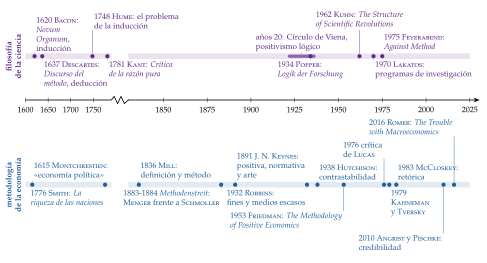
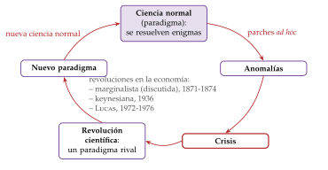
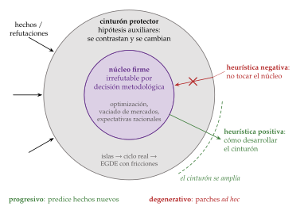
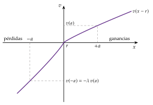
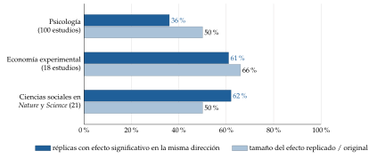
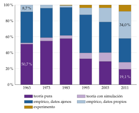
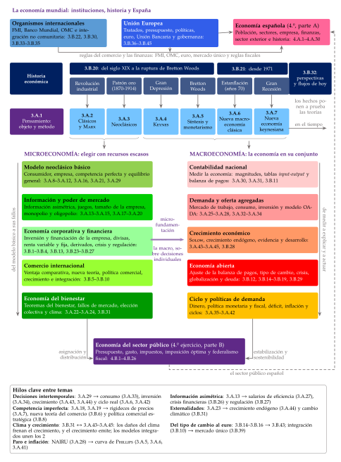

Tema 3.A.1
Objeto y métodos de la ciencia económica. Cuestiones y debates actuales, con especial referencia a la economía conductual.
Qué estudia la economía y cómo: de Robbins a Becker, Popper, Kuhn y Lakatos, el debate de los supuestos, la economía conductual y los experimentos.
Exclusivo Material exclusivo de victorgutierrezmarcos.es y la app Oposición TCEE · DCE. Puedes usarlo libremente para tu estudio personal. No se autoriza su incorporación a otras plataformas, aplicaciones o servicios. Condiciones de uso.
Introducción
Enganche:
«A toro pasado, todos somos Manolete», dice el refrán. En noviembre de 2008, en plena crisis financiera, la reina Isabel II visitó la London School of Economics y preguntó a los economistas por qué nadie la había visto venir. En julio de 2009, la British Academy le contestó por carta que había sido, sobre todo, un fallo de la imaginación colectiva de mucha gente brillante (Besley y Hennessy, 2009).
¿Qué estudia la economía, cómo sabe lo que sabe y qué hace cuando la realidad la desmiente? Son las 3 preguntas de esta exposición: su objeto, sus métodos y los debates que hoy la mueven, en los que la economía conductual ocupa un lugar central.
Relevancia:
Para la teoría: el objeto y el método deciden qué cuenta como conocimiento económico y cómo se discute. Cada escuela del pensamiento es una respuesta a «qué estudiamos» con un «cómo lo estudiamos» [ver tema 3.A.2] [ver tema 3.A.7].
Para la política económica: la economía es la ciencia social con más peso en las decisiones públicas, y de su método depende que sus recomendaciones sean creíbles. La evaluación de políticas con experimentos y los «empujones» (nudges) que hoy usan muchos gobiernos salen de los debates de este tema [ver tema 3.B.28].
Para la actualidad: la crisis de 2008 reabrió el debate sobre los modelos macroeconómicos; los microdatos y el aprendizaje automático están cambiando la forma de contrastar teorías, y la economía conductual ha pasado de ser un catálogo de anomalías a una herramienta de política. Lo reconocen los premios Nobel a Daniel Kahneman (2002), Richard Thaler (2017), Abhijit Banerjee, Esther Duflo y Michael Kremer (2019) y David Card, Joshua Angrist y Guido Imbens (2021) (Nobel Prize Outreach, 2002b, 2017, 2019, 2021).
Además, como toda historia del pensamiento económico, enseña a no quedarse con el último manual y a ver por qué unas ideas llegan en unas épocas y no en otras: son 2 de los 4 motivos de Schumpeter (1954).1
Contextualización:
La palabra viene del griego oikonomía, la buena administración de la casa, que Jenofonte usa en el siglo IV a. C. en su Económico. Durante siglos, los temas económicos (el precio justo, la usura, la moneda del soberano) se trataron dentro de la moral, el derecho y la teología.
La expresión economía política aparece por primera vez en el título de Montchrestien (1615); en inglés, en el tratado de Steuart (1767). La disciplina se independiza con los clásicos, desde A. Smith (1776), que toman el testigo de los fisiócratas y su idea del flujo circular de la renta [ver tema 3.A.2]. A finales del siglo XIX, Marshall populariza el nombre de economics (Marshall, 1890).
Hoy la economía se enseña en todas las universidades, sus conceptos son habituales en la gestión pública y privada y el debate económico ocupa el centro del debate político. Desde 1969, la Real Academia Sueca de Ciencias concede el Premio del Banco de Suecia en Ciencias Económicas en memoria de Alfred Nobel (Nobel Prize Outreach, 2026).2
La dificultad de definirla la resume la frase que se atribuye a Jacob Viner: «economía es lo que hacen los economistas». En cuanto al método, hay un amplio acuerdo en que la economía debe usar los procedimientos de la ciencia; cuáles son esos procedimientos es, precisamente, lo que se discute.
Problemática:
¿Qué estudia la economía y dónde están sus fronteras?
¿Cómo sabe lo que sabe: con qué método construye y contrasta sus teorías, y cómo cambian estas?
¿Qué es un buen modelo, y para qué sirve uno cuyos supuestos no son realistas?
¿Qué cambia cuando las personas no se comportan como supone la teoría, y qué debates abiertos tiene hoy la disciplina?
Estructura:
La exposición sigue el orden del título, de lo que estudia la economía a cómo lo estudia y, por último, a lo que hoy se discute:
I. Objeto de la ciencia económica (I): cómo ha cambiado su definición, de la riqueza de las naciones a la elección con recursos escasos, la distinción entre economía positiva y normativa y sus ramas;
II. Métodos de la ciencia económica (II): si la economía es una ciencia, cómo ha cambiado la idea de método científico, de la deducción y la inducción a Popper, Kuhn y Lakatos, y los debates sobre los modelos y sus supuestos;
III. Cuestiones y debates actuales, con especial referencia a la economía conductual (III): la economía conductual, con el descuento cuasihiperbólico como modelo central; los experimentos, y las innovaciones de método tras la crisis de 2008.
Para ver. Robert Skidelsky sobre cómo hacer (y cómo no hacer) economía en «History of Economic Thought | How & How NOT to Do Economics» (New Economic Thinking, YouTube), y una introducción en español a Menger, Hayek y Keynes en «Historia del Pensamiento Económico: Menger, Hayek y Keynes», de Óscar Vara (YouTube). El origen de la idea de que la ciencia avanza «a hombros de gigantes», en Wikipedia.
3.A.1. Objeto y métodos de la ciencia económica
Introducción2′30″
I. Objeto de la ciencia económica6′
1. Definiciones históricas de economía
2. Debates sobre el objeto: economía positiva y normativa; el imperialismo económico
3. Ramas de la economía y evolución del objeto
II. Métodos de la ciencia económica9′
1. ¿Es la economía una ciencia?
2. Método científico y su aplicación a la economía
3. Debates metodológicos de la ciencia económica
III. Cuestiones y debates actuales, con especial referencia a la economía conductual11′30″
1. Papel de la racionalidad en la economía y la economía conductual
2. Experimentos en economía
3. Innovaciones metodológicas recientes
Conclusión1′
Reparto del cante: introducción, 2′30″; I, 6′ (I.1, 2′30″; I.2, 2′; I.3, 1′30″); II, 9′ (II.1, 1′; II.2, 5′30″: el método deductivo y el inductivo, 1′, la disputa sobre el método, 0′30″, Popper, 1′, Kuhn, 1′30″, Lakatos y Feyerabend, 1′, y las escuelas, 0′30″; II.3, 2′30″); III, 11′30″ (III.1, 7′: la idea y Simon, 1′, el descuento cuasihiperbólico, 2′30″, la teoría de las perspectivas, 1′, los demás sesgos, 1′, los nudges y las finanzas conductuales, 1′, y la valoración, 0′30″; III.2, 2′; III.3, 2′30″), y conclusión, 1′. Los anexos no se cantan.
El refrán del enganche vuelve en la idea final. En el bloque I, la escalera de las 8 definiciones numeradas, con su idea en negrita (1-3, la riqueza: Steuart y Smith, Say y Senior, Mill; 4, Marshall; 5-6, Robbins y su crítica; 7, Becker; 8, Viner), la tabla 1, columna a columna, y el árbol micro y macro con la flecha de la microfundamentación, con los bloques del temario de cada rama (el mapa del anexo A es de apoyo). En el bloque II, 5 hitos de la línea del tiempo (gráfico 1: Bacon y Descartes, la disputa sobre el método, Popper, Kuhn y Lakatos); después, el ciclo de Kuhn (gráfico 2) y el núcleo y el cinturón de Lakatos (gráfico 3), imprescindibles, con cada pegatina junto a su concepto; la tabla 2 es de apoyo. Los debates metodológicos (II.3) van de palabra, con las 7 cualidades de un modelo en una lista vertical. En el bloque III, la función clave es el descuento cuasihiperbólico, que acompaña toda la economía conductual (III.1) con el gráfico del descuento y, después, el boceto de la función de valor. Las notas, las cajas y los anexos son de profundización, para las preguntas del tribunal.
I. Objeto de la ciencia económica
Empezamos por lo que estudia la economía. El objeto de una ciencia es el conjunto de fenómenos que estudia; su método, el camino (del griego méthodos) por el que llega a conocerlos y a contrastar lo que dice de ellos. Schumpeter reconoce una escuela de pensamiento por 3 rasgos: un líder, unos seguidores y un cuerpo doctrinal propio, con su objeto y su método (Schumpeter, 1954).
Conclusión anticipada: la definición de economía ha pasado de la riqueza (los clásicos) a la elección con recursos escasos (Robbins) y de ahí a un modo de razonar que se aplica a cualquier conducta (Becker). Detrás de cada definición hay un debate: si la economía describe lo que es o prescribe lo que debe ser, y hasta dónde llegan sus fronteras.
I.1. Definiciones históricas de economía
Para ver. Ha-Joon Chang explica las distintas formas de entender la economía en «The Nature of Economics | Economics for People with Ha-Joon Chang» (New Economic Thinking, YouTube).
Cómo leer este apartado, para memorizarlo: las definiciones van numeradas del 1 al 8, en orden histórico, agrupadas en 5 etapas. En cada una, en negrita, la idea que la resume; después, el autor y el año; en cursiva, la definición, con sus elementos subrayados; y debajo, una viñeta por elemento, que empieza por él, subrayado y en el mismo orden. Para el cante basta con la escalera de las 8 ideas en negrita.
Desde su nacimiento como ciencia con Adam Smith, el objeto de la ciencia económica se ha definido de formas distintas. Son 8 definiciones en 5 etapas: de la riqueza (los clásicos) a las personas (los neoclásicos), a la elección con recursos escasos (Robbins) y a un modo de razonar (Becker), hasta la respuesta escéptica de Viner.
La riqueza: la economía política clásica
La ciencia del legislador. James Steuart (1767) y Adam Smith (1776): la economía política es una rama de la ciencia del hombre de Estado que se propone dar al pueblo un abundante ingreso o subsistencia y al Estado un ingreso suficiente para los servicios públicos.
Abundante ingreso o subsistencia: para Steuart (1767), el primer tratado en inglés con «economía política» en el título, el objeto de esta ciencia es asegurar a todos los habitantes un fondo de subsistencia y darles empleo; Smith habla de procurar al pueblo un abundante ingreso, «o, más propiamente, ponerle en condiciones de procurárselo por sí mismo» (A. Smith, 1776, lib. IV, introducción).
Ingreso suficiente para los servicios públicos: es el segundo de los «dos objetos distintos» que, para Smith, se propone la economía política (A. Smith, 1776, lib. IV, introducción).
Es una ciencia práctica, al servicio del buen gobierno: más del debe ser que del es.
Las leyes de la riqueza. Jean-Baptiste Say y Nassau Senior y, en menor medida, David Ricardo y Thomas Malthus: la economía política es el estudio de las leyes que rigen la producción, la distribución y el consumo de la riqueza (Senior, 1836).
Leyes: el acento pasa del debe ser al es; la economía descubre regularidades, como la ciencia natural.
Producción, distribución y consumo: el objeto es un campo de la realidad, la riqueza material, y sus 3 fases.
Ciencia y no arte. John Stuart Mill, el gran metodólogo del siglo XIX, matiza a ambos: la economía política es la ciencia que traza las leyes de los fenómenos sociales que nacen de las operaciones combinadas de la humanidad para producir riqueza, en la medida en que no los modifica la persecución de otro objeto (Mill, 1836).
Frente a la definición 1, separa la ciencia del arte: el buen gobierno de la nación es arte, no ciencia.
Leyes de los fenómenos sociales: frente a la definición 2, deja fuera las leyes técnicas de la producción, que son de las ciencias naturales; la economía estudia solo la parte de esos fenómenos que resulta de la acción humana.
En la medida en que no los modifica la persecución de otro objeto: la economía aísla un motivo, el deseo de riqueza, y prescinde de los demás. Es el germen del homo oeconomicus (II.2.1).
Las personas: los neoclásicos
La vida diaria y el bienestar. Alfred Marshall (1890) populariza el término economics, que sustituye a political economy: la economía es el estudio de la humanidad en los asuntos ordinarios de la vida; examina la parte de la acción individual y social más ligada a la obtención y el uso de los requisitos materiales del bienestar (Marshall, 1890, lib. I, cap. 1).
Asuntos ordinarios de la vida: la economía estudia problemas del día a día, como el efecto de un aumento de la demanda sobre el precio de un bien.
Acción individual y social: el acento pasa de la riqueza a las personas que deciden, que es el germen del individualismo metodológico (II.3.5).3
Requisitos materiales del bienestar: la economía mira a los medios materiales de la vida buena, sin dejar de ser una ciencia de lo que es.
La elección: la definición formal
La escasez. Lionel Robbins (1932) y, después, Paul Samuelson, que la lleva a su manual, dan la definición más habitual hoy: «la economía es la ciencia que estudia el comportamiento humano como una relación entre fines y medios escasos que tienen usos alternativos» (Robbins, 1932, pág. 15). La definición es de Robbins, y encaja con la teoría moderna: un agente que optimiza sujeto a restricciones [ver tema 3.A.8].
Comportamiento humano: el objeto ya no es la riqueza, sino la conducta de quien elige.
Fines: los deseos son ilimitados y se pueden ordenar; elegir un fin es renunciar al mejor de los demás, que es su coste de oportunidad, tanto en la decisión individual (un bien u otro) como en la social (la disyuntiva entre eficiencia y equidad).
Medios escasos: si los medios bastaran para todos los fines, no habría que elegir, y no habría problema económico.4
Toda sociedad necesita un mecanismo que asigne unos recursos limitados entre deseos que no lo son. Han convivido 4:
la fuerza, el más antiguo, que no ha desaparecido;
la tradición, que repite cómo se han repartido siempre los recursos;
la autoridad, del Estado o de la Iglesia;
y el mercado, que se convierte en el principal en Europa occidental con el fin del feudalismo y la sociedad industrial (Landreth y Colander, 2006, cap. 1).5
La economía moderna estudia sobre todo el mercado, la asignación descentralizada de millones de agentes, pero también la intervención del Estado (la economía pública y la del bienestar) y la asignación en las economías planificadas.6
Usos alternativos: lo alternativo son los usos de los medios; el tiempo o la tierra sirven para varios fines, y hay que elegir a cuál se dedican.
La definición es formal: no delimita un campo de la realidad (la riqueza, el mercado), sino un aspecto de cualquier conducta. Por eso abre la puerta al imperialismo económico (I.2).
El aprovechamiento de los recursos. La crítica a Robbins: la economía no es solo la gestión de recursos escasos, porque también estudia el aprovechamiento de los recursos aunque no sean escasos.
Aprovechamiento: unos recursos pueden estar mal asignados o sin usar; el problema no es solo repartirlos, sino emplearlos bien.
Aunque no sean escasos: en una depresión sobran trabajadores y máquinas ociosos, y la pregunta es por qué no se usan, que es la de la macroeconomía de Keynes (I.3).
Un modo de razonar: el enfoque económico
La herramienta. Gary Becker (1976): la economía es el estudio del comportamiento de los individuos, que toman todo tipo de decisiones conscientemente, maximizando su bienestar y teniendo en cuenta los costes y beneficios de las alternativas. Lo que la define es su enfoque: agentes que maximizan, preferencias estables y equilibrio de mercado (Becker, 1976).
Comportamiento de los individuos: como Marshall, pone el acento en los individuos (el individualismo metodológico).
Todo tipo de decisiones: la educación, la familia, el divorcio, la discriminación o el delito. Recibió el Premio Nobel de 1992 «por haber extendido el análisis microeconómico a un amplio abanico de comportamientos e interacciones humanas, incluidos los que quedan fuera del mercado» (Nobel Prize Outreach, 1992); su conferencia, «The Economic Way of Looking at Life», lo resume (Becker, 1993). La economía de la salud y la de la educación son hoy ramas propias en buena parte gracias a él, y se habla de imperialismo económico (I.2).7
Conscientemente: donde el derecho o la sociología veían conductas irracionales o determinadas por el entorno, Becker ve sujetos activos, que responden a costes y beneficios, lo que permite predecir el efecto de una política sobre la natalidad o la delincuencia.
Lo que hacen los economistas: la respuesta escéptica
Lo que hacen los economistas. Jacob Viner: «la economía es lo que hacen los economistas». La frase no aparece en sus obras: la recoge Boulding (1941, pág. 1) sin nombrarlo (Backhouse y Medema, 2009). Es una crítica a las definiciones, porque en la práctica el objeto lo marca lo que la profesión investiga.
Economistas: la frase obliga a preguntar quién lo es.
Para Ferreira (2013), quien investiga en economía y publica en revistas con revisión por pares,8 o quien, sin investigar, conoce y usa con rigor los resultados de esas investigaciones.
Entran, por tanto, los académicos y los responsables de la política económica; no entra, solo por serlo, quien dirige empresas, opera en los mercados o asesora.
Sí entra quien usa la teoría en las finanzas, como Harry Markowitz, Merton Miller y William Sharpe, Premio Nobel en 1990 (NobelPrize.org, 1990).
Para Tirole (2017), el economista hace algo parecido al médico: diagnostica y propone el mejor tratamiento que permite el conocimiento disponible.9
I.2. Debates sobre el objeto: economía positiva y normativa; el imperialismo económico
Vistas las definiciones, pasamos al debate que las atraviesa.
Conclusión anticipada: el hilo de la discusión sobre el objeto es si la economía describe o prescribe. La respuesta mayoritaria separa los 2 planos, pero reconoce que los juicios de valor entran por la elección de las preguntas y de los conceptos.
La triple distinción de John Neville Keynes (1891), padre de John Maynard Keynes, que recupera Colander (1992) (tabla 1):
la economía positiva estudia lo que es: relaciones de causa y efecto que se pueden contrastar. «Al pan, pan, y al vino, vino»: describe lo que hay;
la economía normativa estudia lo que debe ser: une economía y ética e incorpora juicios de valor sobre qué estados son mejores, como hace la economía del bienestar [ver tema 3.A.22];
el arte de la economía une las 2: es «un sistema de reglas para alcanzar un fin dado». Dados unos objetivos y lo que sabemos de cómo funciona la economía, ¿cuál es la mejor política para alcanzarlos?
La distinción importa porque los métodos son distintos: el de la economía positiva es formal y abstracto y aísla las fuerzas económicas; el del arte tiene que integrar lo político, lo social y lo institucional, de lo que la economía positiva hace abstracción (Colander, 1992).
| Economía positiva | Economía normativa | Arte de la economía | |
|---|---|---|---|
| Pregunta | Lo que es | Lo que debe ser | Cómo conseguir lo que debe ser |
| Juicios de valor | Se evitan (en lo posible) | Son su contenido | Se toman los fines como dados |
| Método | Abstracto, formal, contrastable | Ético, de criterios | Integra lo político y lo institucional |
| Ejemplo: el salario mínimo | ¿Qué efecto tiene sobre el empleo? | ¿Es justo el salario que deja el mercado? | ¿Qué nivel fijar para mejorar la renta de los que menos ganan sin destruir empleo? |
Fuente: elaboración propia a partir de J. N. Keynes (1891, cap. II) y Colander (1992).
¿Qué debe primar? El debate recorre la historia del pensamiento: la escuela histórica alemana y la escuela de Marshall ponían el acento en el arte, en la estela de Smith; la economía ortodoxa moderna, en la economía positiva, en la de Ricardo, y en ella se ha centrado casi toda la metodología moderna.
La separación de hechos y valores: para Robbins (1932, pág. 132), «la economía trata de hechos comprobables; la ética, de valoraciones y obligaciones»; no están en el mismo plano.
Friedman (1953) lleva la idea al extremo: la economía positiva puede ser independiente de cualquier postura ética, y la normativa debe apoyarse en ella. Su propia regla monetaria se presenta como consecuencia de un resultado positivo, que el crecimiento del dinero es lo que más explica la inflación [ver tema 3.A.5].10
La crítica: para Gunnar Myrdal (1953), los conceptos económicos llevan siempre valoraciones implícitas (el propio criterio de Pareto lo es, porque se desentiende del reparto), y lo honrado es hacerlas explícitas.11
La lectura conductual: Thaler (1980) observa que la teoría del consumidor es, en realidad, normativa: describe cómo debería elegir un agente racional y egoísta, no cómo se elige de verdad. Propone una teoría positiva de la elección, que responda a la pregunta de cómo se comportan los consumidores; es el programa de la economía conductual (III.1).
Volvamos a la pregunta de la reina. Pedir a los economistas que vieran venir la crisis es pedir economía positiva: describir y predecir. Parte de lo que se les reprochó después fue, en cambio, de arte: qué regulación financiera habían aconsejado.
El imperialismo económico: si la economía es la ciencia de la elección con recursos escasos (Robbins, 1932), su objeto no se limita a los mercados. Gary Becker lleva el análisis a la familia, la delincuencia, la discriminación o la educación (Becker, 1993) [ver tema 3.A.25], y Lazear (2000) celebra el «imperialismo económico» como una prueba del éxito del método: sus herramientas (optimización, equilibrio, contraste estadístico) explican y predicen en campos en los que otras disciplinas solo describían.12
«Quien mucho abarca poco aprieta»: la crítica es que el método se exporta sin la institución ni la psicología de cada campo, y que el supuesto de racionalidad egoísta empobrece lo que estudia.
La economía conductual es el movimiento contrario: la economía importa de la psicología (III.1).
I.3. Ramas de la economía y evolución del objeto
Definido el objeto y sus debates, vemos cómo se reparte en ramas.
Conclusión anticipada: la gran división entre micro y macro nace con Keynes y se ha difuminado desde que la macroeconomía se construye sobre decisiones individuales. Es también la columna vertebral del temario de la oposición, que el anexo A resume en un mapa (gráfico 8).
Una primera clasificación: 2 ramas, la microeconomía y la macroeconomía.
La distinción se hace nítida tras la Teoría general de J. M. Keynes (1936), con la que se suele fechar el nacimiento de la macroeconomía como disciplina propia.13
El matiz: la separación se ha complicado, porque casi toda la macroeconomía de hoy está microfundamentada, y la diferencia es más de preguntas que de método.14
El modelo de salarios de eficiencia de Shapiro y Stiglitz (1984) está en los manuales de macroeconomía, porque microfundamenta una rigidez del mercado de trabajo y explica una variable agregada, el paro [ver tema 3.A.27]. Pero su análisis es de equilibrio parcial, y se puede defender que es microeconomía.
I.3.1. Microeconomía
La microeconomía estudia las decisiones de consumidores, empresas y Estado y cómo se coordinan en los mercados.
Sus cimientos: los neoclásicos los ponen a finales del siglo XIX y principios del XX con la teoría de la elección y el cálculo diferencial, con Léon Walras y Alfred Marshall al frente [ver tema 3.A.3]. En la oposición son el bloque del modelo neoclásico básico:
la teoría de la demanda [ver tema 3.A.8] [ver tema 3.A.9];
la producción y los costes [ver tema 3.A.11] [ver tema 3.A.12];
la competencia perfecta y el equilibrio general [ver tema 3.A.16] [ver tema 3.A.21].
Sus campos: de la teoría de la elección salen después 8 campos, que en el temario ocupan casi todo lo verde del mapa (gráfico 8):
Economía de la información y organización industrial: relaja los supuestos de información perfecta y de competencia perfecta. La información asimétrica, desde los años 70 con Akerlof (1970); la elección con riesgo; la teoría de juegos; la empresa, el monopolio y el oligopolio [ver tema 3.A.10] [ver tema 3.A.13]–[ver tema 3.A.15] [ver tema 3.A.17]–[ver tema 3.A.19].
Economía del bienestar: la vertiente normativa del estudio de los mercados, con Vilfredo Pareto, Arthur Pigou y Ronald Coase; la elección colectiva, con Kenneth Arrow; la regulación del poder de mercado y el cambio climático como la mayor externalidad [ver tema 3.A.20] [ver tema 3.A.22]–[ver tema 3.A.24] [ver tema 3.B.31].
Economía pública: la teoría de la imposición óptima de Frank Ramsey, James Mirrlees y Anthony Atkinson, el gasto y el presupuesto. Es el 4.º ejercicio, parte B [ver tema 4.B.11].
Economía del trabajo: de Marshall, Pigou y John Hicks a Becker. En la oposición va con la oferta agregada, porque de ella sale la curva de oferta de la economía [ver tema 3.A.25]–[ver tema 3.A.28].
Comercio internacional: las causas, el patrón y los efectos del comercio entre países, con Bertil Ohlin, Samuelson, Paul Krugman y Marc Melitz; la política comercial y la integración [ver tema 3.B.5]–[ver tema 3.B.10].
Economía financiera y de la empresa: la cartera de media y varianza de Markowitz, una aplicación de la elección con riesgo; los activos, los derivados, las crisis y la regulación financiera; y las decisiones de inversión y financiación de la empresa [ver tema 3.B.1]–[ver tema 3.B.4] [ver tema 3.B.23]–[ver tema 3.B.27].
Economía conductual: incorpora a los modelos ideas y resultados de la psicología, con Daniel Kahneman y Richard Thaler. Es la otra cara del imperialismo económico (III.1).
Otros campos, en parte por el impulso de Becker: la economía de la salud, de la educación o de la familia.
I.3.2. Macroeconomía
La macroeconomía estudia el funcionamiento de la economía en su conjunto (producción, empleo, precios, crecimiento) a partir de la agregación de las conductas.
Su origen: Keynes la funda como rama propia (J. M. Keynes, 1936; De Vroey, 2016) [ver tema 3.A.4]. Es un ejemplo de algo que se repite en la historia de la economía: la situación social, aquí la Gran Depresión, cambia el objeto de estudio.
Su método actual: decir que Keynes puso los cimientos de la macroeconomía de hoy es aventurado.
Desde la crítica de Robert Lucas y la nueva macroeconomía clásica, la macroeconomía se construye sobre agentes que optimizan a lo largo del tiempo, con modelos dinámicos (la microfundamentación) [ver tema 3.A.6].
En ese sentido, la macroeconomía de hoy le debe, en el método, más a la optimización intertemporal de Irving Fisher que a Keynes [ver tema 3.A.29].
Pero las rigideces y la política de estabilización de Keynes siguen en el centro, en la nueva economía keynesiana [ver tema 3.A.7].
Sus ramas, todas con modelos dinámicos microfundamentados, son los 5 bloques cálidos del mapa:
Contabilidad nacional: la medición de la economía, de la que dependen las demás [ver tema 3.A.30] [ver tema 3.A.31] [ver tema 3.B.11].
Demanda y oferta agregadas: el consumo y la inversión, por el lado de la demanda, y el mercado de trabajo, por el de la oferta [ver tema 3.A.25]–[ver tema 3.A.28] [ver tema 3.A.33] [ver tema 3.A.34].
Ciclos y políticas de estabilización: el dinero, la política monetaria y la fiscal, el déficit, la inflación y las teorías del ciclo [ver tema 3.A.35]–[ver tema 3.A.42].
Crecimiento y desarrollo: las decisiones intertemporales, los modelos de crecimiento exógeno y endógeno, su evidencia y el desarrollo [ver tema 3.A.29] [ver tema 3.A.43]–[ver tema 3.A.45] [ver tema 3.B.28].
Economía abierta: la balanza de pagos, el tipo de cambio, los regímenes cambiarios, las crisis y la globalización, hoy con los modelos microfundamentados de la nueva macroeconomía abierta [ver tema 3.A.32] [ver tema 3.B.12] [ver tema 3.B.14]–[ver tema 3.B.19] [ver tema 3.B.29].
I.3.3. Ramas aplicadas y el mapa de la oposición
Más allá de micro y macro, la economía se aplica a instituciones, países y épocas concretos, y el temario lo recoge en los bloques mixtos y en el 4.º ejercicio:
la historia del pensamiento económico, que estudia cada escuela por su objeto y su método [ver tema 3.A.2]–[ver tema 3.A.7];
la historia económica y las perspectivas de la economía mundial [ver tema 3.B.20] [ver tema 3.B.21] [ver tema 3.B.32];
las instituciones económicas internacionales, los organismos internacionales y la Unión Europea [ver tema 3.B.22] [ver tema 3.B.30] [ver tema 3.B.33]–[ver tema 3.B.45];
la economía española, el 4.º ejercicio, parte A [ver tema 4.A.1]–[ver tema 4.A.30];
y la economía del sector público, el 4.º ejercicio, parte B [ver tema 4.B.1]–[ver tema 4.B.26].
El instrumento común: la econometría, que contrasta las teorías de todas las ramas con los datos (II.3.2); en la oposición, el 5.º ejercicio, parte B.
Grandes debates que atraviesan las ramas:
el papel del Estado, los fallos del mercado frente a los del sector público [ver tema 3.A.22] [ver tema 3.A.23];
la neutralidad del dinero, de los clásicos a Keynes, los monetaristas y la nueva macroeconomía clásica [ver tema 3.A.4] [ver tema 3.A.5] [ver tema 3.A.6];
y la existencia y la estabilidad del equilibrio [ver tema 3.A.21].
Cada escuela responde de forma distinta porque parte de un objeto y un método distintos: es lo que permite caracterizarlas (Schumpeter, 1954).
Recapitulación: el objeto ha pasado de la riqueza a la elección y de la elección a un modo de razonar; la economía se separa de la ética por su vocación positiva, pero no se libra de los juicios de valor, y se reparte en ramas cuya frontera es cada vez más de preguntas que de método. Definido qué estudia la economía, pasamos a cómo lo estudia.
II. Métodos de la ciencia económica
Una vez visto el objeto, pasamos al segundo bloque de la exposición: el método, el procedimiento con el que la economía obtiene conocimiento sobre su objeto y lo contrasta. La palabra viene del griego méthodos, «camino»: el camino para llegar a algo.
Conclusión anticipada: la economía usa el método hipotético-deductivo contrastable de las ciencias, con 2 problemas propios: experimenta poco y sus «partículas» piensan. La filosofía de la ciencia del siglo XX ha pasado de buscar un criterio que garantice la verdad a explicar cómo cambian de hecho las teorías, y la economía ha recorrido ese mismo camino.
II.1. ¿Es la economía una ciencia?
Para leer. El debate en la prensa: Robert Shiller (2013), «Is Economics a Science?», y la respuesta de Raj Chetty (2013), «Yes, Economics Is a Science».
Sí, con matices. Para Chetty (2013), la economía es una ciencia porque formula y contrasta hipótesis precisas, como la medicina o la epidemiología, aunque pueda experimentar menos. En la práctica, el método científico le pide:
un grado de abstracción: separar un aspecto de la realidad para analizarlo aislado;
contraste con la evidencia empírica;
y distinguir lo positivo de lo normativo, no ocultar los juicios de valor, que están siempre (I.2).
Frente a las ciencias naturales, comparte el tratamiento sistemático (formular proposiciones y comprobar si se cumplen) y que ninguna es exacta: también la medicina discute los efectos de una dieta. Se diferencia en 4 cosas:
experimenta menos: no se puede subir los impuestos a un país «de prueba», y los efectos de una política recaen también sobre quien no la recibe (la incidencia económica de un impuesto no es la legal). Es una limitación que los experimentos están reduciendo (III.2);
predice peor: el comportamiento humano está disperso y descentralizado, y sus sujetos reaccionan a lo que se dice de ellos. Si cambia la política, cambian las reglas de decisión de los agentes, que es el fondo de la crítica de Lucas (II.3.2); un electrón, en cambio, se comporta igual aunque se cierre el laboratorio;15
entiende el equilibrio de otra forma: en física es un punto fijo de un sistema dinámico; en la macroeconomía desde Lucas, un estado en el que los agentes siguen sendas óptimas a lo largo del tiempo y los mercados se vacían [ver tema 3.A.6];
y tiene más desacuerdo entre autores, que es lo que explica que haya escuelas de pensamiento.
Frente a las demás ciencias sociales, con las que comparte el objeto, la conducta humana en sociedad, usa teorías más formalizadas, más matemáticas y más estadística, y un núcleo teórico más compartido que la historia o la sociología.
¿Ciencia natural o moral? Keynes escribió a Harrod, el 4 de julio de 1938, frente a la economía como ciencia natural, que «la economía es esencialmente una ciencia moral y no una ciencia natural»: usa la introspección y los juicios de valor (J. M. Keynes, 1973). Atkinson (2009) toma la idea como título para pedir que la economía del bienestar, con la desigualdad y la libertad real de elegir, vuelva al centro de la disciplina.
Volvamos a la reina: si las personas cambian su conducta cuando cambian las expectativas, predecir una crisis financiera es más difícil que predecir un eclipse. La pregunta no es si la economía acierta siempre, sino con qué método construye y pone a prueba lo que sabe.
II.2. Método científico y su aplicación a la economía
Identificada la economía como ciencia, vemos cómo ha cambiado la idea de método científico: el conjunto de procedimientos para investigar las causas de los fenómenos, obtener conocimiento nuevo y contrastarlo, que une la razón con la observación. La filosofía ha discutido durante 4 siglos qué parte toca a cada una, y la economía ha seguido esa discusión con algo de retraso (gráfico 1).16

Fuente: elaboración propia a partir de Blaug (1992) y Landreth y Colander (2006, cap. 1). Arriba, la filosofía de la ciencia; abajo, la economía.
II.2.1. Distinción tradicional entre método hipotético-deductivo y método inductivo
El método hipotético-deductivo nace con el Discurso del método de Descartes (1637): va de lo general a lo particular.
Pasos: se parte de un conjunto de axiomas; se deducen con la lógica sus conclusiones; y se enuncian como leyes generales, los teoremas.
Ventaja: rigor y coherencia; si las premisas son ciertas, la conclusión también.
Límite: no dice nada sobre el mundo que no estuviera ya en las premisas, y estas pueden ser falsas. En la ciencia moderna, los axiomas no son verdades evidentes, sino puntos de partida que se aceptan; el problema es encontrar unos que nadie discuta.
En economía: la teoría del consumidor, de los axiomas de las preferencias a la demanda [ver tema 3.A.8], o el primer teorema fundamental de la economía del bienestar [ver tema 3.A.22].
El método inductivo se asocia a Bacon (1620): va de lo particular a lo general.
Pasos: se observan los hechos sin prejuicios, para descubrir regularidades; se infieren de ellos leyes universales; y se generalizan en teorías, que se distinguen de los teoremas porque vienen de la experiencia.
Para los empiristas, solo es científica una teoría probada con los hechos: no se acepta hasta que se verifica, y se rechaza la especulación que no se puede contrastar.
El problema de Hume: ningún número de casos observados garantiza el siguiente; que algo se haya cumplido en \(t\) no asegura que se cumpla en \(t+1\) (Hume, 1748). Además, no se pueden reunir todos los hechos, y la observación nunca es neutral: se observa con una teoría en la cabeza.
«A todo cerdo le llega su San Martín»: el pollo al que el granjero ha dado de comer cada día espera lo mismo mañana, hasta el día en que el granjero le retuerce el pescuezo; es el ejemplo de Bertrand Russell (1912, cap. VI).
En economía hay pocos ejemplos puros: la escuela de Harvard de organización industrial, que parte de regularidades observadas entre la estructura de los mercados y sus resultados [ver tema 3.A.15]; con matices, la preferencia revelada de P. A. Samuelson (1938), que construye la teoría desde lo que se elige y no desde las preferencias [ver tema 3.A.8]; y los experimentos aleatorizados (III.2).
La síntesis de Kant: en la Crítica de la razón pura (Kant, 1781), el conocimiento necesita las 2 cosas, los conceptos de la razón, a priori, y los datos de la experiencia, a posteriori. Desde entonces lo que se discute no es si combinar deducción e inducción, sino en qué proporción.
El método de los clásicos [ver tema 3.A.2]:
A. Smith (1776) combina ambos antes de que Kant lo teorice: razonamiento abstracto (la división del trabajo, la mano invisible) y una masa enorme de ejemplos históricos;
Ricardo (1817) es el primer constructor de modelos: pocas variables, supuestos fuertes y conclusiones deducidas con rigor. Un modelo es una representación simplificada que aísla un mecanismo: unos supuestos de los que se derivan, con más o menos formalismo, unas conclusiones. Schumpeter (1954, pág. 473) llama vicio ricardiano a cargar conclusiones prácticas sobre supuestos tan endebles, sin contraste empírico;
Mill fija el método de la economía política: una ciencia abstracta que estudia al hombre solo como un ser que desea poseer riqueza y es capaz de juzgar los medios para obtenerla, prescindiendo de los demás motivos, y cuyas conclusiones solo son ciertas en abstracto, salvo causas perturbadoras (Mill, 1836). Es empirista en teoría del conocimiento (Mill, 1843), pero para la economía, donde no se puede experimentar, defiende un método deductivo, a priori, que se contrasta después. Es el origen de la figura que después se llamará homo oeconomicus, un nombre que no es de Mill: lo pusieron sus críticos a finales del siglo XIX (Persky, 1995);
Marx va de lo abstracto a lo concreto, de categorías simples (la mercancía, el valor) a la totalidad histórica, y rechaza leyes válidas para todo tiempo: las leyes económicas son las de un modo de producción (Marx, 1939).
II.2.2. La disputa sobre el método (Methodenstreit)
La disputa sobre el método: en 1883, Menger defiende la teoría abstracta frente a la escuela histórica alemana en sus Untersuchungen (Menger, 1883); Gustav von Schmoller, que quería una economía inductiva, construida desde la historia y las instituciones, responde con una reseña durísima (Schmoller, 1883), y Menger replica con Die Irrthümer des Historismus (Menger, 1884). Es la disputa sobre el método (Methodenstreit) [ver tema 3.A.3].
«Cada loco con su tema»: cada bando defendía su método como el único científico, y la disputa enconó durante años la economía en lengua alemana.
Lo que se discute: si hay leyes económicas exactas, válidas en todo tiempo y lugar, que se deducen de unos pocos rasgos de la conducta (Menger), o si solo hay regularidades históricas que se descubren acumulando estudios concretos (Schmoller). Es deducción frente a inducción, y también individualismo frente a holismo (II.3.5).
Dentro del marginalismo hay otra diferencia, que no es parte de la disputa: los austriacos razonan de forma verbal, sin matemáticas, a partir de los principios de la acción humana, lo que L. von Mises (1949) llevará al extremo con la praxeología; la escuela de Lausana (Walras, Pareto), en la senda de Cournot, razona con ecuaciones.17
Su herencia: Max Weber propone los tipos ideales, conceptos abstractos construidos para ordenar la historia, como puente entre las 2 posiciones (Weber, 1904).
En el siglo XX, el debate se repite entre Robbins (1932), para quien las proposiciones básicas de la economía son verdades evidentes de la experiencia común que no necesitan contraste, y Hutchison (1938), que, con el positivismo lógico, le acusa de apoyarse en tautologías y exige proposiciones contrastables; Machlup (1955) responde que basta con contrastar las conclusiones, no cada supuesto.
II.2.3. Metodología en el siglo XX
En el siglo XX la filosofía de la ciencia da 5 respuestas sucesivas a la pregunta de cómo sabemos que una teoría es buena, y cada una deja huella en la economía.
a) El positivismo lógico: el Círculo de Viena (años 20)
Idea: una proposición solo tiene sentido si se puede verificar empíricamente (el principio de verificación); lo que no se puede verificar es metafísica. El científico construye una estructura deductiva que lleva a proposiciones contrastables, y la teoría se acepta como verdadera cuando la experiencia la confirma. Es la culminación de la idea de que la ciencia busca la verdad.
En economía: llega con Hutchison (1938). El movimiento domina la filosofía de la ciencia en los años 20 y 30, pero su exigencia de contraste empírico sobrevive mucho más en la economía.
Límite: una ley universal («todos los mercados se vacían») no se puede verificar nunca, porque haría falta observar todos los casos.
b) El falsacionismo de Karl Popper (1934)
Idea: la inducción no tiene justificación lógica, pero hay una asimetría: ningún número de casos favorables verifica una ley universal, y uno solo en contra la refuta (K. Popper, 1934). Una teoría no se puede verificar, pero sí refutar con una observación incompatible. Que todos los cisnes observados en Europa fueran blancos no probaba que lo fueran todos; un cisne negro en Australia bastó para refutarlo.
«La excepción confirma la regla», dice el refrán; para Popper, la excepción la refuta.
Criterio de demarcación: una teoría es científica si es falsable, si prohíbe algo que podría observarse. «La demanda baja cuando sube el precio, salvo cuando no» no es falsable; una elasticidad concreta, sí.
Método deductivo contrastable: se proponen hipótesis audaces, se deducen sus predicciones y se intenta refutarlas. Las que resisten no son verdaderas, sino corroboradas provisionalmente, y domina la que explica más observaciones sin haber sido refutada. La ciencia avanza por conjeturas y refutaciones, en una especie de revolución permanente (K. R. Popper, 1963).
Si una teoría dice que, cuando sube la cantidad de dinero, los precios suben en la misma proporción, y un experimento lo confirma, solo sabemos que la teoría aún no ha sido refutada: el siguiente puede refutarla.
En economía: Friedman (1953) lo acerca a la práctica: la economía positiva debe dar predicciones contrastables, y una teoría se acepta mientras los datos no la refuten. Es afín al falsacionismo de Popper, aunque con un instrumentalismo que Popper no compartía: las teorías son instrumentos para predecir, no descripciones verdaderas del mundo (Boland, 1979) (II.3.3) [ver tema 3.A.5]. Blaug (1992) es el gran defensor del falsacionismo en economía, y su queja es que los economistas lo predican, pero no lo practican.
Los problemas del falsacionismo:
la tesis de Duhem-Quine: una hipótesis nunca se contrasta sola, sino junto con hipótesis auxiliares (sobre los datos, la medición, el resto del modelo); si la predicción falla, la lógica no dice qué pieza está mal (Duhem, 1906; Quine, 1951). En economía casi siempre hay una auxiliar a mano: la cláusula ceteris paribus. Popper lo admite y completa su criterio: es científica la teoría falsable que, además, no se defiende con hipótesis auxiliares ad hoc, las estratagemas inmunizadoras;
la tecnología: algunas predicciones no se pueden contrastar todavía;
la historia y la psicología de la ciencia: los científicos no abandonan una teoría a la primera anomalía ni contrastan las implicaciones de la que dan por buena, y a veces hacen bien, porque una teoría nueva también nace llena de anomalías.
Volvamos a la reina: ¿refutó la crisis de 2008 la macroeconomía de los modelos de equilibrio general? Con Duhem y Quine, la respuesta no es automática: lo que falló pudo ser el núcleo o un supuesto auxiliar, como la ausencia de bancos en los modelos.
c) Los paradigmas científicos de Thomas Kuhn (1962)
Idea: Kuhn, físico e historiador de la ciencia, no pregunta cómo debería avanzar la ciencia, sino cómo avanza de hecho, y lo presenta como una descripción, no como una norma. Su respuesta: la ciencia avanza por revoluciones: un paradigma domina hasta que acumula anomalías que no sabe explicar y otro lo sustituye (Kuhn, 1962).
Paradigma: los logros científicos que una comunidad reconoce durante un tiempo como modelo de qué problemas estudiar y cómo resolverlos: teorías, conceptos, instrumentos, ejemplos de manual y valores compartidos.
El ciclo (gráfico 2):
ciencia normal: dentro del paradigma, los científicos resuelven enigmas sin cuestionar sus fundamentos, y el sistema teórico explica cada vez más fenómenos;
anomalías: aparecen hechos que el paradigma no explica, o que solo explica con cada vez más supuestos ad hoc; al principio se apartan o se parchean;
crisis: si se acumulan, la comunidad pierde la confianza en el paradigma, pero no lo abandona hasta tener otro;
revolución: un paradigma rival que explica las anomalías gana adeptos; durante un tiempo los 2 compiten y los científicos de cada bando casi no se entienden;
nueva ciencia normal, con preguntas y criterios distintos.

Fuente: elaboración propia a partir de Kuhn (1962). En gris, revoluciones que se han leído así en la economía; la marginalista, discutida: más un proceso que un vuelco (Blaug, 1972).
Inconmensurabilidad: los paradigmas rivales usan conceptos y criterios distintos, así que no hay un experimento neutral que decida entre ellos; el cambio se parece más a una conversión que a una votación. Por eso, frente a Popper, la teoría que domina no tiene por qué ser la mejor: una superior puede tardar en imponerse por la inercia del paradigma existente.
«La ciencia avanza de funeral en funeral»: Kuhn recoge la idea de Max Planck, para quien una verdad nueva no triunfa porque convenza a sus oponentes, sino porque estos acaban muriendo y crece una generación que la conoce desde el principio (Planck, 1950).
En economía: el término paradigma se generaliza en los años 70 y 80, sobre todo entre quienes discrepaban de la teoría dominante, porque prometía que la suya podía sustituirla. Cada escuela se lee como una revolución o como su ausencia (tabla 2; anexo B):
la revolución marginalista cambió el método (el individuo optimizador, el cálculo diferencial)18 pero no las recomendaciones (laissez-faire), y la nueva teoría tardó unos 20 años en imponerse, más un proceso que un vuelco (Blaug, 1972) [ver tema 3.A.3];
la revolución keynesiana es el ejemplo de manual: la Gran Depresión era la anomalía que la teoría neoclásica no explicaba. Pero el paradigma viejo no desapareció: la síntesis neoclásica integró los 2 [ver tema 3.A.4] [ver tema 3.A.5];
la revolución de Lucas: en el sentido de Kuhn, cambia las preguntas, los conceptos y las herramientas de la macroeconomía (De Vroey, 2016) [ver tema 3.A.6]; la nueva economía keynesiana acepta su método y recupera las rigideces: cambia el cinturón, no el núcleo [ver tema 3.A.7].
¿Fue 2008 la anomalía que abre una crisis y una revolución? Es una de las preguntas abiertas del debate actual (III.3.2).
d) Los programas de investigación de Imre Lakatos (1970)
Idea: un punto medio entre la refutación permanente de Popper y los largos periodos de inmovilidad de Kuhn, en el que las teorías cambian sin traumas. La unidad que se evalúa no es una teoría aislada, sino un programa de investigación: una sucesión de teorías con un mismo núcleo (Lakatos, 1970) (gráfico 3).19
Estructura:
el núcleo firme: los supuestos que los investigadores del programa deciden no someter a contraste, irrefutables por decisión metodológica;
el cinturón protector: las hipótesis auxiliares, que sí se contrastan, aguantan el peso de las refutaciones y se cambian, incluso por completo, para absorber las anomalías sin tocar el núcleo;
la heurística negativa prohíbe dirigir las refutaciones contra el núcleo, y la heurística positiva indica cómo desarrollar el cinturón, qué problemas atacar y en qué orden: es «una poderosa maquinaria de resolver problemas», que digiere las anomalías e incluso las convierte en evidencia a favor (Lakatos, 1978).
«Sostenella y no enmendalla»: la heurística negativa manda defender el núcleo aunque lleguen malas noticias; lo que se enmienda es el cinturón.

Fuente: elaboración propia a partir de Lakatos (1970). En gris, el ejemplo de la nueva macroeconomía clásica.
Progresivo o degenerativo: cada estudio deduce del núcleo implicaciones periféricas e intenta refutarlas; una refutación obliga a ajustar el cinturón, no a abandonar el programa, y solo si se acumulan se reconsidera el núcleo. Un programa es:
teóricamente progresivo, si cada ajuste añade contenido y predice hechos nuevos;
empíricamente progresivo, si algunas de esas predicciones se confirman;
degenerativo, si solo acumula parches ad hoc para explicar lo que ya se sabía.
Es científico mientras progresa, y puede dejar de hacerlo, o volver a progresar: es el criterio de Lakatos para distinguir la ciencia de lo que no lo es.
Lo que aporta: reconoce que refutar una teoría es complejo (Duhem-Quine) y que pueden convivir varios programas rivales cuyos méritos tardan en verse. Con él la metodología vuelve a ser normativa: dice qué programa conviene seguir, con la historia como prueba.
En economía: Latsis (1976) reúne las primeras aplicaciones, y cada escuela se puede resumir en su núcleo y su cinturón (tabla 2). En términos de Lakatos (1970), la nueva macroeconomía clásica es un programa de investigación progresivo: su núcleo se ha mantenido y su cinturón protector ha pasado de las islas al ciclo real y de este a los EGDE con fricciones [ver tema 3.A.6].
e) El anarquismo metodológico de Paul Feyerabend (1975) y los enfoques retórico y sociológico
El anarquismo metodológico: los movimientos anteriores son refinamientos del positivismo que reconocen los límites del contraste empírico. Feyerabend (1975) rompe con todos: la historia muestra que los grandes avances (Galileo) violaron las reglas del método de su tiempo, así que cualquier regla fija frena la creatividad, y la mejor ciencia es la que no se ata a ninguna.
«Todo vale» (anything goes), en sus propias palabras. No propone abolir las reglas, sino que ninguna sea infalible ni intocable.
Los 2 enfoques que siguen dudan, además, de que exista una verdad última que descubrir. Si la verdad no basta para explicar qué teorías triunfan, hay que mirar a otras causas:
el enfoque retórico: Deirdre McCloskey (1983) observa que los economistas no convencen solo con contrastes formales, sino con analogías, autoridad, elegancia matemática y relatos. Una teoría se acepta también porque persuade, y estudiar esa retórica no es negar la ciencia, sino describir cómo se practica;
el enfoque sociológico, que arranca de la sociología del conocimiento de Karl Mannheim (1929): la aceptación de una teoría depende también de quién la defiende, de los intereses del grupo dominante y de las instituciones (las revistas, la financiación, los puestos), y el cambio espera a la generación siguiente. Con datos de las ciencias de la vida, Azoulay, Fons-Rosen y Graff Zivin (2019) encuentran que la muerte prematura de un investigador estrella abre su campo a ideas de fuera.20
Ciencia e ideología: para Schumpeter (1949), todo análisis parte de una visión previa en la que se cuela la ideología, pero el análisis tiene reglas propias, que con el tiempo la depuran. Saber por qué un economista cree algo no dice si es verdad.
II.2.4. Conclusiones metodológicas y aplicación
Recapitulación de la filosofía de la ciencia: de la verificación (el positivismo lógico) a la refutación (Popper), de la refutación a la historia (Kuhn), de la historia a la racionalidad de los programas (Lakatos) y de ahí al escepticismo sobre cualquier método (Feyerabend, la retórica y la sociología). Ninguno ha ganado: en la práctica, los economistas son falsacionistas de palabra y lakatosianos de hecho.
Aplicación a las escuelas (tabla 2): Kuhn describe bien los vuelcos (Keynes, Lucas); Lakatos, los ajustes (la nueva economía keynesiana, el ciclo real, los EGDE tras 2008).
| Escuela | Anomalía de partida | ¿Revolución? (Kuhn) | Núcleo y cambio de cinturón (Lakatos) |
|---|---|---|---|
| Clásicos (1776) [ver tema 3.A.2] | El mercantilismo no explica de dónde sale la riqueza | Paradigma fundacional | Núcleo: valor trabajo, clases sociales, acumulación; cinturón: población, renta de la tierra |
| Marginalistas (1871-1874) [ver tema 3.A.3] | El valor de lo que no se reproduce; la paradoja del agua y los diamantes | Discutida: en el método, no en la política; más un proceso que un vuelco | Núcleo nuevo: utilidad marginal, individuo optimizador, equilibrio |
| Keynes (1936) [ver tema 3.A.4] | El paro masivo de la Gran Depresión | Sí, aunque el paradigma viejo no desaparece | Núcleo nuevo: demanda efectiva, incertidumbre, dinero no neutral |
| Síntesis y monetarismo (1937-1970) [ver tema 3.A.5] | La inflación con paro de finales de los 60 | No: integración; el monetarismo, programa rival en el mismo marco | Núcleo neoclásico a largo plazo y keynesiano a corto; el monetarismo cambia el cinturón (la curva de Phillips aumentada con expectativas) |
| Nueva macroeconomía clásica (1972-) [ver tema 3.A.6] | La estanflación y el fracaso de los modelos macroeconométricos | Sí: la revolución de Lucas | Núcleo: optimización, vaciado de mercados, expectativas racionales; cinturón: de las islas al ciclo real y a los EGDE con fricciones (programa progresivo) |
| Nueva economía keynesiana (1977-) [ver tema 3.A.7] | Precios y salarios que no se ajustan | No: acepta el método de la nueva macroeconomía clásica | Mismo núcleo; cinturón: competencia imperfecta y rigideces |
| Economía conductual (1979-) (III.1) | Desviaciones sistemáticas de la racionalidad | No, por ahora | Amplía el cinturón (preferencias, creencias y decisiones no estándar) sin sustituir el núcleo de la optimización |
Fuente: elaboración propia a partir de Kuhn (1962), Lakatos (1970), Blaug (1972), Blaug (1992) y De Vroey (2016). En verde, las escuelas que se leen como revolución; en dorado, las que no.
II.3. Debates metodológicos de la ciencia económica
Vista la evolución del método científico, pasamos a los debates prácticos del método en economía.
Conclusión anticipada: la herramienta central de la economía es el modelo, y los debates del método son sobre qué modelo es bueno: con qué alcance (parcial o general), con cuánta matemática, contrastado cómo, con qué supuestos y sobre qué unidad de análisis.
II.3.1. Equilibrio parcial y equilibrio general
El equilibrio parcial de Marshall estudia un mercado por separado con la cláusula ceteris paribus, suponiendo que lo que pasa en él no afecta al resto [ver tema 3.A.16].21 El equilibrio general de Walras estudia todos los mercados a la vez, con sus interrelaciones [ver tema 3.A.21].
No compiten: el parcial basta cuando el mercado es pequeño respecto al resto y los efectos indirectos son despreciables (la regulación de un sector), y gana en sencillez; el general es necesario cuando los efectos se transmiten (un acuerdo comercial).
«Los árboles no dejan ver el bosque»: el riesgo del parcial es olvidar los efectos indirectos; el del general, perderse en la interdependencia.
Sus herederos: Friedman y la primera generación de la nueva economía keynesiana preferían el enfoque marshalliano, como una «máquina para descubrir verdades concretas» (Friedman, 1949); la nueva macroeconomía clásica y la segunda generación de la nueva economía keynesiana trabajan en equilibrio general [ver tema 3.A.6] [ver tema 3.A.7].
II.3.2. Matemáticas, estadística y econometría
Las matemáticas: de herramienta a lenguaje.
Historia breve: Daniel Bernoulli resuelve la paradoja de San Petersburgo con una utilidad cóncava (Bernoulli, 1738) [ver tema 3.A.10]; Cournot (1838) y Bertrand modelizan el duopolio [ver tema 3.A.19]; los marginalistas traen el cálculo diferencial, y Walras y Pareto, en Lausana, el equilibrio general, mientras Menger y la escuela de Cambridge prefieren el razonamiento verbal; P. A. Samuelson (1947) reescribe la teoría como problemas de optimización, y Arrow y Debreu demuestran la existencia del equilibrio [ver tema 3.A.21].
La teoría de juegos, la rama de las matemáticas que formaliza la interdependencia estratégica, nace con von Neumann y Morgenstern (1944), centrada en juegos de suma cero y cooperativos. Nash (1950) define el equilibrio de los juegos no cooperativos, Selten (1965) lo extiende a los dinámicos, Harsanyi (1967–1968) a los de información incompleta, que servirán a la economía de la información de los 70, y Schelling (1960) lo aplica al conflicto [ver tema 3.A.14].22
A favor: el lenguaje matemático da rigor y generalidad: obliga a escribir todos los supuestos, garantiza que las conclusiones se siguen de ellos y descubre resultados que el razonamiento verbal no ve (la existencia del equilibrio general, la inconsistencia temporal).
En contra:
el formalismo vacío: Leontief (1971) denunciaba una profesión que prefiere demostrar teoremas sobre economías imaginarias a recoger datos;
confundir la belleza con la verdad: para Krugman (2009), la profesión se equivocó en 2008 porque tomó por verdad la belleza de unos modelos vestidos de matemáticas impresionantes;
la mathiness: P. M. Romer (2015) llama así al uso de las matemáticas para dar apariencia de rigor a supuestos que no se discuten, con una conexión débil entre los símbolos y los conceptos económicos que dicen representar. «Mucho ruido y pocas nueces»;
lo que no se formaliza se pierde: la incertidumbre radical, las instituciones o la historia quedan fuera porque no caben en el modelo, y el modelo acaba decidiendo qué preguntas se hacen.
El término medio: Marshall usaba las matemáticas como taquigrafía y las traducía después a palabras con ejemplos reales; si no lo conseguía, quemaba las matemáticas.23 Keynes, matemático de formación, escribió una Teoría general casi sin ecuaciones, sin dejar de ser riguroso.
La econometría: une la teoría económica, las matemáticas y la estadística para medir relaciones económicas, y sirve para 3 cosas: contrastar hipótesis (da los instrumentos para refutar teorías), predecir y evaluar políticas. Frisch y Tinbergen recibieron el primer Premio Nobel de Economía, en 1969 (Nobel Prize Outreach, 1969). Sus etapas:
los primeros modelos macroeconométricos: tras Keynes y con la contabilidad nacional, Tinbergen estima los primeros, para los Países Bajos y, para la Sociedad de Naciones, para Estados Unidos (Tinbergen, 1939): la teoría elige las variables (el consumo y la renta, la inversión y el tipo de interés), la economía se divide en sectores y los parámetros se estiman con métodos estadísticos. J. M. Keynes (1939) le critica que los datos no pueden decidir entre teorías si no se sabe de antemano cuáles son las causas;
el enfoque probabilístico: Haavelmo (1944) da a la econometría su fundamento estadístico (el modelo es una distribución de probabilidad que se estima y se contrasta), y la Comisión Cowles construye los modelos de ecuaciones simultáneas, como el de Estados Unidos de Klein y Goldberger (1955) [ver tema 3.A.5];
deducción frente a inducción, otra vez: Koopmans (1947) acusa a la medición del ciclo del NBER (Burns y Mitchell, 1946) de ser una «medición sin teoría»: sin un modelo, los datos no dicen nada sobre las causas;
la causalidad en el sentido de Granger (1969): una variable «causa» a otra si su pasado ayuda a predecirla mejor que el pasado de la propia variable. Es precedencia predictiva, no causalidad en sentido estricto: el pronóstico del tiempo «causa» en el sentido de Granger la lluvia, y nadie cree que la provoque;
la crítica de Lucas (1976): los coeficientes de esos modelos recogen reglas de decisión que cambian cuando cambia la política, así que sirven para predecir, pero no para evaluar políticas. Es también una crítica de método: qué es un buen modelo y para qué sirve [ver tema 3.A.6];
las respuestas: los vectores autorregresivos (VAR) de Sims (1980), que dejan hablar a los datos con pocas restricciones porque las de los grandes modelos eran «increíbles»; y la calibración de Kydland y Prescott (1996), que elige los parámetros con datos de largo plazo y juzga el modelo por cómo reproduce los hechos del ciclo [ver tema 3.A.42];
y la revolución de la credibilidad, el giro hacia los diseños que identifican efectos causales, que es ya un debate actual (III.3).
II.3.3. Debate sobre la relevancia de los supuestos
¿Tienen que ser realistas los supuestos?
La tesis de Friedman (1953): lo que cuenta es lo bien que predice una teoría, no lo realistas que sean sus supuestos. El buen jugador de billar golpea como si resolviera las ecuaciones de la mecánica, y las empresas se comportan como si maximizaran el beneficio, aunque no calculen ingresos ni costes marginales: las que no lo hacen desaparecen. Es el instrumentalismo: las teorías son instrumentos para predecir [ver tema 3.A.5].
«Gato blanco o gato negro, lo que importa es que cace ratones», dice el proverbio chino: para Friedman, da igual de qué color sea el supuesto si el modelo predice.
La réplica: Samuelson lo criticó como el «giro F» (F-twist): unos supuestos falsos no se vuelven inocuos porque el modelo prediga bien (P. A. Samuelson, 1963), y daba preferencia al realismo de los supuestos. Si el mecanismo es falso, el modelo fallará en cuanto cambien las circunstancias, que es justo cuando se necesita.
Hoy: el debate sigue abierto en otra forma. Para Paul Romer (2016), la macroeconomía ha usado supuestos cómodos pero increíbles, como perturbaciones que nadie observa, para proteger sus modelos de los datos. Y la crítica de Lucas es, en el fondo, un argumento a favor del realismo de los supuestos estructurales: solo los parámetros profundos (las preferencias y la tecnología) resisten un cambio de política (II.3.2).
Volvamos a la reina: los modelos que usaban los bancos centrales en 2007 casi no tenían sector financiero. Era un supuesto cómodo mientras los bancos funcionaban, y el peor posible cuando dejaron de hacerlo.
II.3.4. Cualidades deseables en un modelo económico
Qué es un modelo: una representación simplificada de la realidad, un sistema deductivo en miniatura que aísla un mecanismo dejando fuera lo accesorio. Para Lucas (1980), es una construcción deliberadamente irreal, una economía artificial que sirve de laboratorio para ensayar políticas que sería demasiado caro probar en una economía real [ver tema 3.A.6].
Las 7 propiedades de un buen modelo (Gabaix y Laibson, 2008):
parsimonia: pocos supuestos y pocos parámetros libres;
tratabilidad: se puede resolver y analizar con facilidad;
profundidad conceptual: revela un mecanismo fundamental, no solo describe;
generalidad: se aplica a muchas situaciones;
falsabilidad: hace predicciones que los datos podrían rechazar;
consistencia empírica: no contradice la evidencia disponible;
precisión predictiva: sus predicciones son concretas y aciertan.
Las 4 primeras las acepta toda la profesión; las 3 últimas no siempre, y son las que los autores reivindican frente a los modelos que solo se juzgan por su elegancia. Entre ellas hay disyuntivas: un modelo más realista suele ser menos tratable y menos general.
A estas cualidades la crítica de Lucas añade una para evaluar políticas: que los parámetros sean estructurales, invariantes a la política [ver tema 3.A.6].
II.3.5. Individualismo metodológico y holismo; monismo y pluralismo
Individualismo metodológico: los fenómenos sociales (su estructura y sus cambios) se explican, en último término, por las decisiones de individuos con sus fines, creencias y restricciones. Es el principio de Marshall, de los marginalistas y de la teoría moderna: el mercado, el paro o la inflación son resultados agregados de decisiones individuales [ver tema 3.A.3].
Holismo metodológico: hay estructuras sociales (clases, instituciones, normas) con leyes propias que no se reducen a las decisiones individuales y que, al revés, las condicionan. Es la posición de Marx, de la escuela histórica alemana y de buena parte del institucionalismo y del postkeynesianismo [ver tema 3.A.2] [ver tema 3.A.4].
Por qué importa hoy: la microfundamentación de la macroeconomía es individualismo metodológico, y el agente representativo es individualismo con un solo individuo: nada garantiza que el agregado se comporte como una persona (Kirman, 1992) [ver tema 3.A.29]. Los modelos de agentes heterogéneos y los de agentes y redes son 2 respuestas, desde el individualismo, a esa crítica holista (III.3).
Monismo o pluralismo: ¿hay un único método científico o caben varios? Tras la caída del positivismo, Caldwell (1982) defiende el pluralismo metodológico: ningún criterio de los filósofos sirve para decidir de una vez qué es ciencia, y conviene juzgar cada programa con varios. McCloskey (1983) lo lleva a la conversación entre economistas, y Rodrik (2015) a los modelos: la economía no es un modelo, sino una colección de modelos, y su arte es elegir el adecuado a cada pregunta.
Recapitulación: el método de la economía es hipotético-deductivo y contrastable; sus modelos se juzgan por su capacidad de aislar mecanismos y de predecir, y la econometría ha pasado de estimar modelos grandes a identificar efectos concretos. Ese giro hacia los datos y las dudas sobre la racionalidad de los agentes son los 2 grandes debates de hoy, que estudiamos en el último bloque.
III. Cuestiones y debates actuales, con especial referencia a la economía conductual
Una vez vistos el objeto y el método, pasamos al último bloque de la exposición: lo que hoy se discute.
Conclusión anticipada: los grandes cambios de las últimas décadas van en la misma dirección, hacia los datos. La teoría ha empezado a sustituir al agente perfectamente racional por personas con límites que se miden en el laboratorio, y la economía empírica se ha vuelto experimental y cuasiexperimental. La economía conductual es la parte más visible de ese giro, y también la más discutida; la crisis de 2008 ha obligado, además, a ampliar los modelos macroeconómicos.
III.1. Papel de la racionalidad en la economía y la economía conductual
III.1.1. La idea: de la elección racional a la economía conductual
El supuesto: buena parte de la teoría económica descansa en la elección racional: el individuo tiene preferencias completas, transitivas y estables, sigue su propio interés y elige lo mejor que le permiten sus restricciones [ver tema 3.A.8]. Su versión más exigente son las expectativas racionales: los agentes no cometen errores sistemáticos al prever [ver tema 3.A.6] (anexo C).
¿Es un buen supuesto? Para Friedman, sí, aunque no sea literalmente cierto: basta con que los agentes se comporten como si optimizaran y el modelo prediga bien (II.3.3).
La racionalidad limitada: Herbert Simon (1955) sustituye al maximizador por un agente con conocimiento parcial de cada situación y capacidad de cálculo limitada, que no maximiza nada, sino que busca resultados satisfactorios [ver tema 3.A.15].24
Heurísticas y sesgos: Daniel Kahneman y Amos Tversky muestran en los 70 que esos límites dejan huellas sistemáticas, y por tanto predecibles (Tversky y Kahneman, 1974), y proponen la teoría de las perspectivas (Kahneman y Tversky, 1979); sus anomalías parten de los fallos de la utilidad esperada (las paradojas de Allais y de Ellsberg) [ver tema 3.A.10].25
La economía conductual: Richard Thaler (1980) lleva esas ideas a la teoría del consumidor, y desde los 90 entran en la corriente principal: el ahorro, las finanzas, el mercado de trabajo, la política pública (Thaler, 2016).26 Se define como el estudio de cómo deciden de hecho las personas cuando sus límites cognitivos, su autocontrol y sus preferencias sociales las apartan de la racionalidad estándar, con métodos de la psicología (experimentos) y de la economía (modelos y datos). No niega que las personas persigan fines: documenta desviaciones sistemáticas y las incorpora a los modelos.
Los 2 sistemas (Kahneman, 2011): el sistema 1 es rápido, automático e intuitivo (reconocer una cara, contestar \(2+2\)); el sistema 2, lento, deliberado y costoso (calcular \(17\times24\)). Casi todas las decisiones las toma el 1, y el 2 solo interviene cuando algo le alerta: de ahí que los errores sean sistemáticos.27
Un mapa para ordenar las desviaciones: DellaVigna (2009) las clasifica según qué pieza del agente estándar falla:
preferencias no estándar: sobre el tiempo (el descuento cuasihiperbólico, III.1.2), sobre el riesgo (las perspectivas) y sobre los demás (las preferencias sociales);
creencias no estándar: el exceso de confianza y las heurísticas;
decisiones no estándar: el efecto marco, las cuentas mentales, la atención limitada y la fuerza de la opción por defecto.
III.1.2. Preferencias intertemporales inconsistentes: el descuento cuasihiperbólico
a) Idea
La pregunta: ¿por qué los planes de ahorro, de dieta o de gimnasio se hacen para el lunes y el lunes no se cumplen, si nadie nos obliga a hacerlos?
El modelo estándar descuenta de forma exponencial (P. A. Samuelson, 1937): entre 2 periodos consecutivos se descuenta siempre lo mismo, estén cerca o lejos, y el plan que hoy parece óptimo lo sigue pareciendo mañana. Si el descuento solo depende de la distancia al presente, el exponencial es el único que da preferencias dinámicamente consistentes (Strotz, 1955) [ver tema 3.A.29].
La evidencia dice otra cosa: en las encuestas de Thaler (1981), la compensación que se pide por esperar implica tasas de descuento altísimas para retrasos cortos y mucho menores para retrasos largos. Se descuenta mucho entre hoy y mañana y poco entre 2 días del futuro lejano: somos impacientes a corto plazo y pacientes a largo, y un descuento así es hiperbólico.
«Una cosa es predicar y otra dar trigo»: el yo de hoy planea ahorrar desde el mes que viene; cuando llega el mes que viene, el yo de entonces prefiere gastar.
b) Modelo
i) Supuestos
Un hogar que vive infinitos periodos elige su consumo \(C_t\) en cada uno, con una utilidad instantánea \(u(\cdot)\) creciente y cóncava, sin incertidumbre, y valora en cada \(t\) el plan que le queda por delante.
Descuenta el futuro con 2 parámetros: \(\delta\in(0,1)\), el factor exponencial de siempre, y \(\beta\in(0,1)\), el sesgo por el presente, que castiga todo lo que no es hoy (Laibson, 1997).28
ii) Desarrollo
La utilidad del hogar en \(t\) es:
\[U_t=u(C_t)+\beta\sum_{s=1}^{\infty}\delta^{s}\,u(C_{t+s}),\qquad 0<\beta<1,\quad 0<\delta<1\tag{1}\]
Entre hoy y mañana se descuenta con \(\beta\delta\); entre 2 periodos futuros consecutivos, solo con \(\delta\): toda la impaciencia extra se concentra en el primer paso. Con \(\beta=1\) es el exponencial de P. A. Samuelson (1937).
Es una aproximación sencilla al descuento hiperbólico generalizado de Loewenstein y Prelec (1992), \(D(t)=(1+at)^{-\gamma/a}\), con \(a,\gamma>0\) (letras locales): la caída del factor de descuento es fuerte al principio y suave después.29
Por qué el plan no se cumple: la relación marginal de sustitución entre consumir en \(t+1\) y en \(t+2\) cambia según desde dónde se mire: \[\begin{aligned} \text{desde } t:&\quad \frac{\beta\delta\,u'(C_{t+1})}{\beta\delta^{2}\,u'(C_{t+2})}=\frac{u'(C_{t+1})}{\delta\,u'(C_{t+2})},\\ \text{desde } t+1:&\quad \frac{u'(C_{t+1})}{\beta\delta\,u'(C_{t+2})}. \end{aligned}\] Como \(\beta<1\), al llegar \(t+1\) el hogar valora más el consumo de ese periodo, en relación con el siguiente, de lo que lo valoraba cuando planeaba: quiere consumir más y ahorrar menos de lo previsto. Con \(\beta=1\) las 2 expresiones coinciden.
Un ejemplo con números (utilidad lineal para simplificar, periodos de una semana, \(\beta=0{,}7\) y \(\delta=0{,}99\)):
hoy: 100 euros hoy o 110 dentro de una semana. Como \(100>0{,}7\cdot0{,}99\cdot110\approx76{,}2\), se cogen los 100;
planeando para dentro de un año: 100 euros en la semana 52 o 110 en la 53. Los 2 llevan el mismo \(\beta\delta^{52}\), y queda \(100<0{,}99\cdot110\approx108{,}9\): se planea esperar;
al llegar la semana 52, la elección vuelve a ser la de hoy y se cogen los 100: el plan se incumple sin que haya llegado ninguna información nueva.
Interpretación gráfica (gráfico 4): la exponencial cae a ritmo constante; la cuasihiperbólica salta en \(t=1\) (el factor \(\beta\)) y después cae como una exponencial. Con los parámetros de Angeletos et al. (2001), un euro dentro de un año vale hoy 0,94 con el descuento exponencial y 0,67 con el cuasihiperbólico; dentro de 30 años, 0,15 y 0,19: el cuasihiperbólico es más impaciente a corto plazo y más paciente a largo.

Fuente: elaboración propia con las funciones y los parámetros de Angeletos et al. (2001): exponencial, \(0{,}939^t\); hiperbólica, \((1+4t)^{-1/4}\); cuasihiperbólica, 1 en \(t=0\) y \(0{,}7\cdot 0{,}957^t\) después (\(t\) en años).
iii) Implicaciones
Inconsistencia temporal: el plan que hoy parece óptimo deja de parecerlo cuando llega su momento. El hogar se comporta como una sucesión de «yoes» con preferencias distintas, y su elección es un juego entre ellos.
Infraahorro y procrastinación: se adelantan los placeres y se retrasan los costes; se ahorra menos de lo que el propio hogar querría para su yo futuro.
Demanda de compromiso: quien sabe que es impaciente (sofisticado) paga por atarse las manos, como Ulises ante las sirenas: planes de pensiones que no se pueden rescatar, cuentas de ahorro bloqueadas, cuotas de gimnasio; quien no lo sabe (ingenuo) sobrestima lo que hará y procrastina más (O’Donoghue y Rabin, 1999).
Política: si las personas se equivocan contra sí mismas, cambiar la opción por defecto ayuda sin prohibir nada (III.1.4).
c) Extensiones
Al consumo agregado: con hogares cuasihiperbólicos, el consumo responde más a la renta corriente y convive la riqueza ilíquida con deudas caras [ver tema 3.A.33].
A la búsqueda de empleo: los parados impacientes buscan menos de lo que les convendría (DellaVigna y Paserman, 2005) [ver tema 3.A.26].
A la política económica: la misma lógica, en un gobierno ante agentes que miran al futuro, es la inconsistencia temporal de la política: el plan óptimo de hoy (no inflar) deja de serlo mañana (Kydland y Prescott, 1977) [ver tema 3.A.36].
d) Evidencia empírica
Las tasas de descuento estimadas caen con el horizonte (Frederick, Loewenstein y O’Donoghue, 2002).
El gimnasio: en Estados Unidos, los socios con una cuota mensual de más de 70 dólares van de media 4,3 veces al mes, más de 17 dólares por visita, cuando el bono de 10 visitas les saldría a 10: pagan por un autocontrol que creen que tendrán (DellaVigna y Malmendier, 2006).
El compromiso: en Filipinas, una cuenta que impedía retirar el ahorro antes de una fecha o una cantidad elegidas por el propio cliente, sin ningún interés extra, la abrió algo más de una cuarta parte de quienes la recibieron, y al cabo de un año el saldo medio del grupo al que se ofreció había crecido 81 puntos porcentuales más que el del grupo de control (Ashraf, Karlan y Yin, 2006).
El desarrollo: en Kenia, un pequeño descuento en el fertilizante ofrecido justo después de la cosecha, cuando los agricultores tienen dinero, aumenta su uso tanto como subvenciones mucho mayores en la época de siembra (Duflo, Kremer y Robinson, 2011) [ver tema 3.B.28].
e) Valoración
A favor: explica con un solo parámetro más lo que el modelo estándar no explica, en especial la demanda de compromisos, y conserva su estructura: es el ejemplo de cómo la economía conductual amplía el modelo en vez de sustituirlo, y cumple las cualidades de un buen modelo (II.3.4).
En contra: \(\beta\) no se observa y es difícil de medir, porque el dinero es fungible: elegir entre dinero hoy y mañana no es elegir entre consumo hoy y mañana. Con decisiones de esfuerzo, el sesgo por el presente aparece con claridad; con dinero, mucho menos (Andreoni y Sprenger, 2012; Augenblick, Niederle y Sprenger, 2015). La impaciencia aparente se confunde, además, con las restricciones de liquidez, y no siempre está claro si el hogar es ingenuo o sofisticado, aunque las recomendaciones de política cambian con ello.
Abre la pregunta normativa de las aplicaciones: si el yo de hoy y el de mañana quieren cosas distintas, ¿cuál cuenta para el bienestar, y debe el Estado ayudar a no equivocarse?
III.1.3. Otras desviaciones: el riesgo, los demás, las creencias y las decisiones
El riesgo: la teoría de las perspectivas de Kahneman y Tversky (1979) [ver tema 3.A.10]. Describe cómo se elige con riesgo mejor que la utilidad esperada, con 3 rasgos (gráfico 5):
punto de referencia: se valoran ganancias y pérdidas respecto a un punto de referencia \(r\), no la riqueza final;
aversión a las pérdidas: una pérdida duele más que una ganancia igual satisface, unas 2,25 veces con los datos de Tversky y Kahneman (1992); en el gráfico, \(\lambda\approx2{,}25\) (aquí \(\lambda\) es la aversión a las pérdidas, no un multiplicador);
sensibilidad decreciente: la función de valor es cóncava en las ganancias y convexa en las pérdidas, en forma de S; y las probabilidades no se ponderan de forma lineal: se sobrevaloran las pequeñas.

Lo que explica:
el efecto dotación: se pide por desprenderse de un bien bastante más de lo que se pagaría por él. En el experimento de las tazas, quienes recibían una taza pedían por venderla en torno al doble de lo que ofrecían por ella quienes no la tenían, cuando el sorteo había hecho iguales a los 2 grupos (Kahneman, Knetsch y Thaler, 1990) [ver tema 3.A.8];
el sesgo hacia el statu quo: se tiende a mantener la opción por defecto (W. Samuelson y Zeckhauser, 1988), la base de los empujones (III.1.4). «Virgencita, que me quede como estoy»;
la rigidez a la baja de los salarios nominales: un recorte es una pérdida (Kahneman, Knetsch y Thaler, 1986b);
y la felicidad y la renta: la satisfacción declarada sube poco con la renta media de un país a largo plazo (Easterlin, 1974), coherente con un punto de referencia que se adapta y con la comparación con los demás; con más países y años, Stevenson y Wolfers (2008) encuentran que sí sube, aunque menos que proporcionalmente.
Los demás: las preferencias sociales. Para Kahneman, Knetsch y Thaler (1986a, S285), «la ausencia de consideraciones de justicia y lealtad en la teoría económica estándar es uno de los contrastes más llamativos entre esta teoría y las demás ciencias sociales, y también entre la teoría económica y las intuiciones de la gente sobre el comportamiento humano». Ya A. Smith (1759) subrayaba que la conducta humana se interesa por la suerte de los demás. La evidencia viene del laboratorio, con el ultimátum y el dictador (III.2). Los modelos la recogen con 2 parámetros: en la aversión a la desigualdad de Fehr y Schmidt (1999), la utilidad baja con la diferencia entre lo propio y lo ajeno, más si el otro tiene más; con la equidad, la reciprocidad y la competencia de Bolton y Ockenfels (2000), se explica a la vez por qué se reparte en el ultimátum y por qué los mercados competitivos dan resultados egoístas.
Las creencias: heurísticas y sesgos. Las heurísticas de Tversky y Kahneman (1974) son atajos que funcionan casi siempre y fallan de forma predecible:
representatividad: se juzga la probabilidad por el parecido con un estereotipo, olvidando las probabilidades de partida;
disponibilidad: se cree más probable lo que se recuerda con facilidad, como un accidente de avión frente a uno de coche. «El que se quema con leche, ve una vaca y llora»;
anclaje: una cifra inicial, aunque sea irrelevante, sesga la estimación. Tras girar una ruleta que daba 10 o 65, los sujetos estimaron que el porcentaje de países africanos en la ONU era, en la mediana, del 25 o del 45 %, respectivamente.
Se añaden el exceso de confianza y el sesgo retrospectivo: conocido el resultado, creemos que era más previsible de lo que era (Fischhoff, 1975). Volvamos a la reina: «a toro pasado, todos somos Manolete» es, precisamente, ese sesgo; y la economía conductual documenta errores sistemáticos al formar expectativas que las expectativas racionales descartan [ver tema 3.A.6].
Las decisiones: el efecto marco y las cuentas mentales.
El efecto marco: la elección cambia con la forma de presentar opciones idénticas. Ante una epidemia que matará a 600 personas, el 72 % prefiere un programa que «salva a 200 seguro» a otro con 1/3 de probabilidad de salvar a todos; si el mismo par se describe como «morirán 400 seguro» frente a 2/3 de probabilidad de que mueran todos, el 78 % elige el arriesgado (Tversky y Kahneman, 1981).
Las cuentas mentales: el dinero es fungible, pero se reparte en «cuentas» (la de la casa, la de las vacaciones) con reglas propias (Thaler, 1985, 1999). Si al llegar al teatro se ha perdido un billete de 10 dólares, el 88 % compra igualmente la entrada; si se ha perdido la entrada, que costaba 10 dólares, solo la vuelve a comprar el 46 %: la segunda se carga a la cuenta del teatro, que ya parece gastada (Tversky y Kahneman, 1981). Por eso la propensión a consumir depende del origen de cada euro (H. M. Shefrin y Thaler, 1988) [ver tema 3.A.33].
Recapitulación: el agente de la economía conductual valora ganancias y pérdidas y no riqueza, es impaciente a corto plazo y paciente a largo, se preocupa por los demás, usa atajos y separa su dinero en cuentas. Cada rasgo tiene un modelo con pocos parámetros, y todos comparten una consecuencia: lo que se elige depende de cómo se presentan las opciones. De ahí nacen las aplicaciones.
III.1.4. Aplicaciones: el paternalismo libertario y los empujones
Idea: Thaler y Sunstein (2003) llaman paternalismo libertario a orientar las decisiones hacia lo que las propias personas querrían, sin prohibir ninguna opción ni cambiar mucho los incentivos. Su herramienta es el empujón (nudge): un cambio en la arquitectura de la elección, como el orden, la opción por defecto o el momento (Thaler y Sunstein, 2008) [ver tema 3.A.20].
Por qué es inevitable: alguien tiene que decidir qué opción viene marcada, qué plato se ve primero en el comedor o cómo se redacta un formulario. Si la presentación cambia la elección, no hay arquitectura neutral: la cuestión no es si influir, sino en qué dirección.
Ejemplos:
la opción por defecto: en una gran empresa de Estados Unidos, pasar a la inscripción automática en el plan de pensiones elevó mucho la participación de los recién contratados, y la mayoría se quedó con la aportación y el fondo que venían por defecto (Madrian y Shea, 2001). El Reino Unido la generalizó desde 2012, con total libertad para darse de baja: la proporción de asalariados con derecho a la inscripción que ahorra en un plan de empresa pasó del 55 % en 2012 al 90 % en 2025 (Department for Work and Pensions, 2017, 2026). «El que calla otorga»;
la donación de órganos: los países europeos en los que todos son donantes salvo que digan lo contrario tienen tasas de consentimiento muy superiores a las de los que exigen apuntarse (Johnson y Goldstein, 2003);
ahorrar mañana: el programa Save More Tomorrow compromete a destinar al ahorro parte de las subidas de sueldo futuras, que no se sienten como pérdida; quienes se apuntaron pasaron de ahorrar el 3,5 % al 13,6 % de su salario en 40 meses (Thaler y Benartzi, 2004). Combina el descuento cuasihiperbólico (comprometerse para el futuro es fácil), la aversión a las pérdidas y la inercia.
En las administraciones: siguiendo a la unidad pionera del Gobierno británico (Behavioural Insights Team), muchos gobiernos tienen equipos que diseñan empujones y los evalúan con experimentos. Las políticas tienen que contar con el comportamiento, también en el desarrollo [ver tema 3.B.28], en el diseño de los incentivos [ver tema 3.A.13] y en la regulación [ver tema 3.A.20].
Las finanzas conductuales: los sesgos de los inversores explican regularidades que la eficiencia de los mercados no explica, como la prima de las acciones o el efecto disposición, y el arbitraje no las corrige (Shleifer y Vishny, 1997) (anexo D) [ver tema 3.A.10] [ver tema 3.B.23].
III.1.5. Valoración: aportaciones y críticas
Aportaciones: más realismo sin renunciar a los modelos, y políticas baratas y eficaces. La economía conductual ha dejado de ser una escuela aparte para convertirse en una caja de herramientas de la corriente principal: los modelos macroeconómicos con agentes de atención limitada (Gabaix, 2020) son el ejemplo.
Las críticas:
una lista, no una teoría: cada anomalía tiene su modelo, pero no hay un modelo unificado que diga cuál usar en cada caso (Fudenberg, 2006); Thaler responde que la exigencia de una sola teoría viene de querer que la economía sea la física de las ciencias sociales (Thaler, 2015);
el laboratorio no es el mercado: con apuestas pequeñas, estudiantes y sin aprendizaje, los sesgos pueden exagerarse; los comerciantes con experiencia apenas muestran efecto dotación (List, 2003), y la generosidad del laboratorio se reduce fuera de él (Levitt y List, 2007);
la replicación: en psicología se reprodujo el 36 % de 100 estudios (Open Science Collaboration, 2015); en economía experimental, 11 de 18 experimentos de la American Economic Review y el Quarterly Journal of Economics (el 61 %), con 2 tercios del efecto original (Camerer et al., 2016) (gráfico 6). Y los empujones que evalúan las unidades de los gobiernos tienen efectos mucho menores que los publicados en las revistas: 1,4 puntos de aumento medio frente a 8,7, una diferencia que se explica sobre todo por la publicación selectiva (DellaVigna y Linos, 2022);
la racionalidad ecológica: para Gerd Gigerenzer (2018), muchas heurísticas no son sesgos, sino reglas que funcionan bien en el entorno en que se usan, con poca información y poco tiempo (Gigerenzer y Goldstein, 1996): llamarlas errores es juzgarlas con el modelo equivocado;
el paternalismo: ¿quién decide qué quiere de verdad la persona, y quién corrige los sesgos del regulador, que también los tiene? Un empujón que funciona porque no se nota roza la manipulación.

Recapitulación: la racionalidad sigue siendo el punto de partida, pero ya no el de llegada: la economía conductual ha ampliado el cinturón protector de la teoría (tabla 2) con preferencias, creencias y decisiones medidas en experimentos. Pasamos a esos experimentos.
III.2. Experimentos en economía
Conclusión anticipada: la idea de que la economía no puede experimentar (II.1) ha dejado de ser cierta. Hoy experimenta en el laboratorio, aprovecha los experimentos que hace la realidad y sortea programas sobre el terreno: es el regreso de la inducción, con un diseño cuidadoso.
En el laboratorio: Vernon Smith (1962) lleva un mercado al aula y muestra que, con pocos participantes y sin información completa, los precios convergen al equilibrio competitivo (Nobel Prize Outreach, 2002a). El laboratorio es hoy la principal fuente de la economía conductual:
el ultimátum (Güth, Schmittberger y Schwarze, 1982): un jugador propone cómo repartir una cantidad y el otro acepta o rechaza; si rechaza, ninguno cobra. Con jugadores que solo miran su dinero, el equilibrio de Nash perfecto en subjuegos es ofrecer lo mínimo y aceptarlo [ver tema 3.A.14]; en el laboratorio, la oferta media es del 40 % y se rechaza el 16 % de las ofertas (Oosterbeek, Sloof y Kuilen, 2004);
el dictador (Forsythe et al., 1994): el mismo, pero el segundo no puede rechazar. Los dictadores dan de media el 28 % (Engel, 2011): a la gente le importa el reparto, pero parte de la generosidad del ultimátum es miedo al rechazo. Las preferencias por la equidad existen [ver tema 3.A.24].
Los experimentos naturales: buscar en la realidad una asignación casi aleatoria. David Card y Alan Krueger comparan los restaurantes de comida rápida de Nueva Jersey, donde el salario mínimo subió el 1 de abril de 1992 de 4,25 a 5,05 dólares por hora (un 19 %), con los de la vecina Pensilvania, donde no cambió: el empleo no cayó en Nueva Jersey en relación con Pensilvania (Card y Krueger, 1994) [ver tema 3.A.25]. El Premio Nobel de 2021 se repartió entre Card, «por sus contribuciones empíricas a la economía laboral», y Joshua Angrist y Guido Imbens, «por sus contribuciones metodológicas al análisis de las relaciones causales» (Nobel Prize Outreach, 2021).30
Los experimentos aleatorizados (RCT), la versión más pura, que la economía del desarrollo toma de los ensayos clínicos. Cada persona \(i\) tiene 2 resultados posibles, \(Y_i(1)\) con el programa y \(Y_i(0)\) sin él (aquí \(Y\) no es la renta), y \(D_i\) indica si lo recibe; solo se observa uno de los 2. Comparar a tratados y no tratados mezcla el efecto con las diferencias previas entre ellos, el sesgo de selección; si el programa se sortea, el sesgo desaparece y la diferencia de medias estima el efecto medio (Angrist y Pischke, 2009) [ver tema 3.B.28].
«Ver para creer»: un programa se juzga por su efecto medido, no por lo que promete.
El Premio Nobel de 2019 fue para Abhijit Banerjee, Esther Duflo y Michael Kremer, «por su enfoque experimental para aliviar la pobreza mundial» (Nobel Prize Outreach, 2019).
Validez interna y externa: el sorteo elimina el sesgo de selección entre tratados y controles, pero no garantiza que el resultado valga en otro sitio; las ventajas y los límites, en el anexo E.
Lectura metodológica: conviven los modelos estructurales, que van de la teoría a los datos, y el trabajo experimental, que va de los datos a la teoría, sin acuerdo sobre cuál debe guiar la política [ver tema 3.B.28].
Para leer más. El debate que abrió el Premio Nobel de 2019: «This year’s Nobel prizes prompt soul-searching among economists», The Economist, 21 de noviembre de 2019 (The Economist, 2019).
III.3. Innovaciones metodológicas recientes
III.3.1. La idea: el giro empírico y la revolución de la credibilidad
Conclusión anticipada: la economía de hoy es más empírica que nunca y sus modelos son más heterogéneos y más ricos que los de 2008; la pregunta es si eso es una revolución o una evolución.
El giro empírico: en las 3 revistas generales de referencia, la teoría pura pasa del 51 % de los artículos en 1963 al 19 % en 2011, y el trabajo empírico con datos propios, del 9 al 34 % (Hamermesh, 2013) (gráfico 7).
La revolución de la credibilidad: en 1983, Edward Leamer (1983) pedía quitarle el truco a la econometría, porque los resultados cambiaban con pequeñas decisiones del investigador. Angrist y Pischke (2010) llaman revolución de la credibilidad a la respuesta: en lugar de estimar un modelo completo, diseñar la investigación para identificar un efecto causal concreto (experimentos naturales y aleatorizados, diferencias en diferencias, variables instrumentales, regresión discontinua) [ver tema 3.B.28].

Fuente: elaboración propia a partir de Hamermesh (2013, tabla 4). Artículos de la American Economic Review, el Journal of Political Economy y el Quarterly Journal of Economics; porcentaje de cada año.
III.3.2. ¿Evolución o revolución? La macroeconomía tras 2008
La pregunta: si la crisis financiera fue la anomalía que obliga a cambiar de paradigma (Kuhn) o un fallo que se arregla ampliando el cinturón protector de los modelos de equilibrio general dinámicos y estocásticos (Lakatos) [ver tema 3.A.6] [ver tema 3.A.7].
Revolución: para Paul Romer (2016), la macroeconomía de los EGDE se alejó de los datos; para Stiglitz (2018), el modelo falló en lo esencial, el origen financiero de las crisis, y no basta con añadirle fricciones. Más lejos van los modelos basados en agentes heterogéneos que siguen reglas sencillas y aprenden, que defiende Axel Leijonhufvud (2006) desde su crítica a la racionalidad perfecta (Leijonhufvud, 1993).
Entre las 2: Roger Farmer (2010) propone mantener los EGDE con equilibrios múltiples y expectativas que se cumplen a sí mismas, a la manera de los animal spirits de Keynes.
Evolución: O. J. Blanchard (2018) defiende que los EGDE sigan siendo el núcleo, junto a modelos más sencillos para la política y otros para la predicción, cada uno con su uso; Reis (2018) recuerda que buena parte de lo que se les reprocha ya se investigaba antes de 2008, y el balance de Galí (2018) es que los modelos nuevos keynesianos se han ampliado, no sustituido. Es la tesis del proyecto Rebuilding Macroeconomic Theory (Vines y Wills, 2018) y de la conferencia recogida en O. Blanchard y Summers (2019): fricciones financieras, expectativas menos que racionales, agentes heterogéneos y mejores microfundamentos.
Lectura: en términos de Lakatos, el núcleo (agentes que optimizan, equilibrio, expectativas) se mantiene y el cinturón se ensancha; si los ajustes predicen hechos nuevos, como el papel de la liquidez de los hogares en la transmisión de la política monetaria, el programa es progresivo. Por ahora no hay un paradigma rival con su propio ejemplo de manual, que es lo que Kuhn pide para hablar de revolución.
III.3.3. Microdatos, heterogeneidad, desigualdad y colas de la distribución
Del agente representativo a la distribución: los modelos de agentes heterogéneos con mercados incompletos (HANK) sustituyen al hogar representativo por hogares con distinta riqueza y liquidez; la política monetaria actúa sobre todo por efectos indirectos, a través del empleo y la renta, y la distribución pasa a importar para el agregado (Kaplan, Moll y Violante, 2018) [ver tema 3.A.7] [ver tema 3.A.33].
Los microdatos: los registros administrativos (declaraciones de impuestos, afiliación a la seguridad social) miden lo que las encuestas no veían: la concentración de la renta en el 1 % más rico a lo largo de un siglo (Piketty y Saez, 2003; Piketty, 2014) o la movilidad entre generaciones barrio a barrio (Chetty et al., 2014) [ver tema 3.A.45].
Las colas de la distribución: cuando unas pocas empresas son enormes, sus perturbaciones no se compensan en el agregado y explican una parte importante de las fluctuaciones (Gabaix, 2011).
III.3.4. Complejidad, redes y modelos basados en agentes
La economía de la complejidad (Instituto de Santa Fe, desde los 80): la economía como un sistema de muchos agentes que interactúan, aprenden y se adaptan, en el que el agregado tiene propiedades que no se deducen del individuo y el equilibrio es la excepción (Arthur, 1999).
Los modelos basados en agentes: se simulan miles de agentes con reglas sencillas, a menudo heurísticas, y se observa qué agregados emergen; los bancos centrales los usan para estudiar la vivienda o las crisis bancarias (Haldane y Turrell, 2018).
La dinámica no lineal y el caos: modelos deterministas pueden generar ciclos sin perturbaciones externas y trayectorias muy sensibles a las condiciones iniciales (Grandmont, 1985) [ver tema 3.A.42].
Las redes: quién se relaciona con quién (bancos, proveedores) decide cómo se propagan las perturbaciones: una en un sector central llega a todos (Acemoglu et al., 2012).
Valoración: describen mejor la inestabilidad y las crisis, pero sus resultados dependen de reglas de conducta que se eligen con mucha libertad, lo que choca con la parsimonia y la falsabilidad de un buen modelo (II.3.4).
III.3.5. Datos masivos, aprendizaje automático y replicación
Aprendizaje automático: los algoritmos (árboles, redes neuronales) son muy buenos prediciendo \(\hat y\), pero no estiman efectos causales \(\hat\beta\) por sí solos (Mullainathan y Spiess, 2017). Se usan para predecir en tiempo real (nowcasting), para medir con imágenes de satélite o con textos y, combinados con los métodos causales, para estimar efectos distintos en cada grupo (Athey y Imbens, 2019). Es inducción a gran escala, y el problema de Hume sigue ahí: un algoritmo entrenado con el pasado no sabe qué hacer cuando cambia la política, que es otra vez la crítica de Lucas (II.3.2).
Replicación: en 159 literaturas empíricas de economía, la potencia estadística mediana es muy baja y buena parte de los efectos publicados están exagerados (Ioannidis, Stanley y Doucouliagos, 2017); en macroeconomía empírica, solo un tercio de los artículos se reproduce con los datos y el código de sus autores (Chang y Li, 2022). Las respuestas, el registro previo de los experimentos y la publicación de datos y códigos, son la versión práctica del falsacionismo.
Recapitulación de III: los 2 debates actuales del método, la credibilidad de la evidencia y el realismo de la conducta, se han encontrado: los empujones se diseñan con la economía conductual y se evalúan con experimentos, y los modelos macroeconómicos incorporan heterogeneidad y fricciones medidas con microdatos. Todos se enfrentan a la misma pregunta: si lo que funciona en un sitio funciona en otro.
Conclusión
Recapitulación:
En conclusión, la economía estudia cómo las sociedades eligen con recursos escasos, un objeto que ha pasado de la riqueza de las naciones a cualquier elección; lo estudia con un método hipotético-deductivo que se contrasta con los datos y que se entiende mejor con Kuhn y Lakatos que con el falsacionismo estricto; y hoy lo pone a prueba con la psicología, los experimentos y los microdatos.
La economía conductual ha mostrado que las personas se desvían de la racionalidad de forma sistemática, en el tiempo, en el riesgo y en lo que les importa, y lo ha convertido en modelos, como el descuento cuasihiperbólico, y en políticas.
Relevancia:
El método decide qué políticas se pueden evaluar y cuánto confiar en una recomendación económica.
Por la crítica de Lucas, los bancos centrales usan modelos estructurales; por la economía conductual, los planes de pensiones con inscripción automática; por los experimentos, los programas que se financian.
Extensiones:
Cada escuela con su objeto y su método [ver tema 3.A.2] [ver tema 3.A.3] [ver tema 3.A.4] [ver tema 3.A.5] [ver tema 3.A.6] [ver tema 3.A.7]; la elección con riesgo [ver tema 3.A.10]; los juegos experimentales [ver tema 3.A.14]; la elección intertemporal [ver tema 3.A.29]; el consumo con descuento cuasihiperbólico [ver tema 3.A.33]; las finanzas conductuales [ver tema 3.B.23]; la evaluación de impacto [ver tema 3.B.28] [ver tema 4.B.6].
Opinión:
Frente a la «visión acumulativa», que ve en la teoría de hoy la suma de todo lo anterior, la historia del método muestra que las ideas abandonadas vuelven cuando cambian las preguntas: la racionalidad limitada de Simon esperó décadas, la inducción del Methodenstreit ha vuelto con los experimentos y los equilibrios múltiples y la heterogeneidad, con la crisis (Roncaglia, 2006).
Por eso conviene un pluralismo de modelos, cada uno para su pregunta (Rodrik, 2015).
Idea final:
A toro pasado, todos vemos venir la crisis, y la economía conductual nos explica por qué.
Lo que hace científica a la economía no es acertar siempre, sino convertir cada anomalía en una pregunta que se puede contrastar.
Así respondió a la pregunta de la reina: no con un paradigma nuevo, sino con un cinturón protector más ancho y más realista.
A. Anexo: el mapa de la oposición
Este tema es el primero del temario, y su apartado de ramas (I.3) sirve de mapa para todos los demás. El gráfico 8 lo dibuja con los colores de los bloques de la organización del temario:
arriba, la historia del pensamiento, de la que salen las 2 ramas: los clásicos y los neoclásicos fundan la microeconomía, y de Keynes a la nueva economía keynesiana se construye la macroeconomía;
en el centro, el 3.er ejercicio en 2 columnas: la microeconomía, en verdes, va del modelo básico a sus fallos y aplicaciones; la macroeconomía, en colores cálidos, de medir la economía al corto plazo y al largo plazo;
en el pasillo central, lo que une cada fila: la microfundamentación, las rigideces del mercado de trabajo, el papel del Estado, el ahorro y la inversión, y lo real y lo monetario de la economía internacional;
debajo, los bloques mixtos (historia económica, organismos internacionales y Unión Europea) y, al pie, el 4.º ejercicio, que aplica la teoría a España y al sector público, y la econometría del 5.º, que la contrasta.
Los temas 3.A son la parte A del 3.er ejercicio (economía general), y los 3.B, la parte B (economía financiera, economía internacional y relaciones económicas internacionales).

Fuente: elaboración propia a partir de los títulos oficiales del temario y de la organización del temario por bloques de Víctor Gutiérrez Marcos.
B. Anexo: Kuhn y Lakatos aplicados a las escuelas
La revolución marginalista [ver tema 3.A.3]: es discutible llamarla revolución en el sentido de Kuhn. Sus recomendaciones de política son las de los clásicos (el laissez-faire), pero cambia el método en 2 cosas:
el individualismo metodológico: los fenómenos sociales se explican por decisiones individuales, y no por clases sociales o naciones, como en los clásicos;
el cálculo diferencial: la optimización en el margen sustituye al razonamiento verbal de los ensayos clásicos.
Y la nueva teoría tardó unos 20 años en imponerse: más un proceso que un vuelco (Blaug, 1972).
La revolución keynesiana [ver tema 3.A.4]: el mejor ejemplo de lo que Kuhn llama revolución científica. La Gran Depresión era la anomalía que el paradigma neoclásico no explicaba, y la Teoría general ofrecía una respuesta. Pero el resultado no fue el que predice Kuhn: el paradigma viejo no fue sustituido del todo, sino que los 2 convivieron y se integraron en la síntesis neoclásica [ver tema 3.A.5].
La nueva macroeconomía clásica [ver tema 3.A.6]: la revolución de Lucas, que consolidan Kydland y Prescott, cambia los temas, las herramientas y las conclusiones de política. Sus 2 piezas metodológicas:
la crítica de Lucas (Lucas, 1976): los modelos macroeconométricos de la síntesis predecían bien, pero no servían para evaluar políticas alternativas, porque sus coeficientes eran relaciones estadísticas del pasado que recogían reglas de decisión de los agentes, y esas reglas cambian cuando cambia la política. Si un modelo estimado con series históricas dice que \[Y_t=\hat{\beta}_0+\hat{\beta}_1\,m_{t-1}+\varepsilon_t,\qquad \hat{\beta}_1>0,\] más dinero en \(t-1\) eleva la producción en \(t\); pero si el banco central intenta explotarlo, los agentes aprenden la nueva regla, los coeficientes estimados cambian (\(\hat{\beta}_0\) o \(\hat{\beta}_1\) caen) y la producción puede no moverse. La respuesta es microfundamentar: escribir los modelos con preferencias, tecnología y restricciones, cuyos parámetros no dependen de la política;
los modelos de equilibrio general dinámicos y estocásticos (EGDE): agentes que optimizan a lo largo del tiempo ante perturbaciones aleatorias, en equilibrio general (Kydland y Prescott, 1982).31 En el modelo de ciclo real básico, hogares que eligen consumo, trabajo y ahorro, empresas competitivas con una función de producción agregada y ningún sector público: sin fallos de mercado, los ciclos son la respuesta óptima a las perturbaciones y estabilizarlos sería ineficiente. Los agentes forman sus expectativas de forma racional (anexo C).
«Lo que voy a describir es una revolución en la macroeconomía, una transformación metodológica que ha cambiado la forma de hacer nuestra ciencia»: así empezó Prescott su conferencia Nobel, el 8 de diciembre de 2004 (Prescott, 2006). El programa lo reconocen los premios Nobel a Lucas (1995), Kydland y Prescott (2004) y Sargent (2011) (Nobel Prize Outreach, 1995, 2004, 2011), y su instrumental se ha llevado a la macroeconomía abierta [ver tema 3.B.14] y a la economía del clima [ver tema 3.B.31].
La nueva economía keynesiana [ver tema 3.A.7]: aquí es difícil hablar de sustitución de paradigmas. Hay más bien una convergencia de método: los nuevos keynesianos adoptan los EGDE y cambian las hipótesis auxiliares, con competencia imperfecta y rigideces de precios. En términos de Lakatos, el mismo núcleo con otro cinturón.
Después de 2008: el debate entre evolución y revolución (III.3.2). Resumen de todas las escuelas, en la tabla 2.
C. Anexo: de las expectativas estáticas a las racionales
Este anexo solo ordena las hipótesis de expectativas para el debate sobre la racionalidad [ver tema 3.A.5] [ver tema 3.A.6].
Estáticas: se espera lo mismo que ocurrió en el último periodo, \(\pi^e_t=\pi_{t-1}\). Son las de la telaraña y, en la práctica, las de la síntesis.
Adaptativas: cada periodo se corrige la previsión en una fracción \(\gamma\) del último error, \[\pi^e_t=\pi^e_{t-1}+\gamma\,\big(\pi_{t-1}-\pi^e_{t-1}\big),\qquad \gamma\in(0,1],\] que es la forma que usan la síntesis y el monetarismo [ver tema 3.A.5]. Miran solo al pasado y admiten errores sistemáticos: si la inflación sube de forma continuada, se la subestima siempre.
Racionales (Muth, 1961): los agentes usan de forma eficiente toda la información de que disponen, incluido el modelo de la economía y la regla de la política, y no cometen errores sistemáticos: el error de previsión tiene media nula y no se puede predecir con lo que se sabía al prever [ver tema 3.A.6].
La crítica conductual: con racionalidad limitada, las expectativas se forman con reglas sencillas, con anclaje en el pasado y exceso de confianza, y se aprenden; los modelos con aprendizaje o con atención limitada son el punto intermedio (Gabaix, 2020).
D. Anexo: finanzas conductuales
La teoría de las perspectivas explica 4 regularidades de los mercados financieros que la teoría tradicional explica mal [ver tema 3.A.10] [ver tema 3.B.23].
La prima de las acciones: en Estados Unidos, de 1928 a 2025, las acciones han rendido de media unos 6,7 puntos al año más que las letras del Tesoro y 5,5 más que los bonos a 10 años (Damodaran, 2026); con una aversión al riesgo razonable, la utilidad esperada solo explica una prima muy inferior (Mehra y Prescott, 1985) [ver tema 3.A.33]. Para Benartzi y Thaler (1995), un inversor que revisa su cartera muy a menudo y al que las pérdidas duelen el doble que las ganancias ve las acciones muy arriesgadas y exige por ellas una prima alta: es la aversión miope a las pérdidas.
El exceso de volatilidad: las cotizaciones oscilan mucho más que los dividendos que en teoría descuentan (Shiller, 1981). Si la aversión al riesgo baja tras las ganancias y sube tras las pérdidas, los movimientos se amplifican.
El efecto disposición: se venden demasiado pronto las acciones con plusvalía y se retienen demasiado las que tienen minusvalía (H. Shefrin y Statman, 1985). Con una ganancia latente, la concavidad de la función de valor hace preferir asegurarla: se vende; con una pérdida latente, la convexidad hace preferir arriesgarse: se retiene.
Los dividendos: las empresas los pagan aunque durante mucho tiempo tributaran más que las plusvalías. Por la forma de la función de valor, 2 ganancias separadas, un dividendo y una plusvalía, se valoran más que una sola de la misma cuantía, y un dividendo junto a una pérdida la hace menos dolorosa (H. M. Shefrin y Statman, 1984; Thaler, 1985).
Por qué no lo corrige el arbitraje: aprovechar los errores ajenos exige capital, paciencia y asumir riesgo, y los precios pueden alejarse aún más antes de volver (Shleifer y Vishny, 1997).
E. Anexo: ventajas y límites de los experimentos aleatorizados
Resumen para las preguntas del tribunal sobre la evaluación con experimentos [ver tema 3.B.28] [ver tema 4.B.6].
Ventajas:
eliminan el sesgo de selección entre tratados y controles: la diferencia de medias estima el efecto medio (Angrist y Pischke, 2009);
son transparentes y fáciles de entender para quien decide la política;
permiten evaluar antes de generalizar un programa, y no solo después, y probar variantes de diseño.
Límites:
validez externa: el país, las escuelas o los pueblos se eligen a menudo por conveniencia, y los sitios que aceptan ser evaluados no son representativos (Allcott, 2015);
falta de teoría: sin un modelo que explique por qué funciona un programa, no se sabe a qué otros sitios trasladarlo (Deaton y Cartwright, 2018);
efectos de equilibrio general: un programa pequeño no mueve los precios ni los salarios, y el mismo programa a gran escala, sí;
conducta observada: quien sabe que participa en un experimento puede cambiar su conducta;
alcance: sirven para intervenciones concretas, microeconómicas, y poco para las grandes preguntas macroeconómicas e institucionales (Deaton, 2010);
ética: el grupo de control no recibe, mientras dura el estudio, un programa que puede beneficiarle.
F. Anexo: aspectos para el test
Fechas y obras: Montchrestien, «economía política» (1615); Bacon, Novum Organum (1620); Descartes, Discurso del método (1637); Hume (1748); Smith (1759, 1776); Kant, Crítica de la razón pura (1781); Mill, ensayo sobre la definición (1836) y Sistema de lógica (1843); Methodenstreit (1883-1884); J. N. Keynes, Scope and Method (1891); Robbins (1932); Popper, Logik der Forschung (1934); Hutchison (1938); Haavelmo (1944); Mises, Human Action (1949); Friedman, «The Methodology of Positive Economics» (1953); Simon (1955); Kuhn (1962); Lakatos (1970; recopilación póstuma, 1978); Tversky y Kahneman (1974, 1981) y Kahneman y Tversky (1979); Feyerabend (1975); Lucas (1976, 1980); Thaler (1980, 1981, 1985); Güth et al. (1982); McCloskey (1983); Card y Krueger (1994); Laibson (1997); Thaler y Sunstein (2003, 2008); Gabaix y Laibson (2008); Angrist y Pischke (2010).
Nobel: Frisch y Tinbergen, 1969 (el primero); Myrdal y Hayek, 1974; Simon, 1978; Becker, 1992; Nash, Selten y Harsanyi, 1994; Kahneman y Vernon Smith, 2002; Thaler, 2017; Banerjee, Duflo y Kremer, 2019; Card, Angrist e Imbens, 2021.
Trampas:
en la definición de Robbins, lo alternativo son los usos de los medios, y la definición es solo suya, no de Samuelson;
la «ciencia moral» es de Keynes (carta a Harrod, 1938), no de Atkinson;
el homo oeconomicus describe la abstracción de Mill, pero el nombre se lo pusieron sus críticos;
la praxeología es de Mises (1949), no de Menger; el Methodenstreit enfrenta a Menger y Schmoller, no a Walras;
Friedman es instrumentalista; Popper, no; en Lakatos, lo que se contrasta es el cinturón, no el núcleo; Proofs and Refutations (1976) es de filosofía de las matemáticas;
el descuento hiperbólico generalizado es de Loewenstein y Prelec (1992); el cuasihiperbólico, de Laibson (1997); la inconsistencia, de Strotz (1955); en el modelo \(\beta\)-\(\delta\), \(\beta\) es el sesgo por el presente;
el juego del ultimátum es de Güth, Schmittberger y Schwarze (1982), no de Thaler;
Tversky no recibió el Nobel: murió en 1996.
Preguntas del tribunal en exámenes anteriores, con dónde se contestan: defina «paradigma» (II.2.3); ¿cómo afectan las revoluciones científicas a la economía? (tabla 2 y anexo B); analice un mercado desde la economía positiva y desde la normativa, y diferencia entre ambas (I.2); la escuela austriaca y su método (II.2.2; [ver tema 3.A.3]); Romer (2016) y el debate de los supuestos (II.3.3); el imperialismo de la economía (I.2); verificabilidad y falsabilidad, y las críticas a Popper (II.2.3); Friedman y el realismo de los supuestos (II.3.3); la crítica de Lucas y los modelos econométricos a los que se refiere (II.3.2 y anexo B).
Preguntas de test de exámenes anteriores, en el simulador:
Bibliografía
Los otros 2: la historia es fuente de ideas (principios que no fructificaron pueden orientar la investigación de hoy) y muestra cómo se desplazan las fronteras de la ciencia (cada época trae sus problemas y su forma de afrontarlos). La evolución del pensamiento económico resulta de la interacción de varios factores: el contexto económico de cada momento, el pensamiento anterior y los avances de otras disciplinas, como la filosofía, las matemáticas, la física o la biología. Conocerla permite entender las raíces del pensamiento actual, analizar los fenómenos económicos pasados y presentes y valorar los distintos programas de investigación.↩︎
La lista completa de premiados, en el portal del Premio Nobel de Economía de Wikipedia.↩︎
El individualismo metodológico sostiene que los fenómenos sociales, su estructura y sus cambios, se explican en principio por las propiedades de los individuos: sus metas, sus creencias y sus acciones. Es un reduccionismo: explica las entidades grandes por las pequeñas. Contrasta con el holismo de Marx, para quien la realidad social se explica por las estructuras (las clases, el modo de producción) a través de las cuales se relacionan los individuos.↩︎
Una crítica a la escasez como seña de la economía es que no es exclusiva de ella: todas las ciencias sociales parten de algún modo de esa idea. Sin escasez, por ejemplo, no habría derecho patrimonial, porque es la delimitación de la propiedad lo que da origen a los problemas que estudia.↩︎
Los 4 mecanismos no se excluyen, y el paso de la tradición, el Estado y la Iglesia al mercado no ha sido lineal ni universal: en algunas sociedades se pasó de una economía feudal a una economía autoritaria moderna, con planificación central (a principios del siglo XX), y en Europa del Este, después, de la planificación al mercado.↩︎
Es el debate del cálculo socialista. Para L. von Mises (1920), sin precios de mercado no es posible el cálculo económico; Lange (1936) responde con un planificador que fija los precios por tanteo, como haría un subastador; y Hayek (1945) replica que el problema no es de cálculo sino de información: el conocimiento de las preferencias y de las técnicas está disperso entre millones de personas, y los precios lo agregan. Es uno de los orígenes del diseño de mecanismos y del fallo del sector público por falta de información [ver tema 3.A.3] [ver tema 3.A.23].↩︎
Un ejemplo del alcance de ese enfoque fuera de la academia es el éxito de Freakonomics (Levitt y Dubner, 2005), de Steven Levitt, colega de Becker en Chicago, y el periodista Stephen Dubner.↩︎
La revisión por pares (peer review) es la evaluación de un trabajo por expertos del mismo campo que no forman parte de la revista, para asegurar su calidad y su rigor antes de publicarlo.↩︎
Tirole recibió el Premio Nobel en 2014 «por su análisis del poder de mercado y de la regulación» (Nobel Prize Outreach, 2014).↩︎
Friedman recibió el Premio Nobel en 1976 «por sus logros en el análisis del consumo, la historia y la teoría monetarias y por demostrar la complejidad de la política de estabilización» (Nobel Prize Outreach, 1976).↩︎
Myrdal compartió el Premio Nobel de 1974 con Friedrich Hayek «por su trabajo pionero en la teoría del dinero y de las fluctuaciones y por su penetrante análisis de la interdependencia de los fenómenos económicos, sociales e institucionales» (Nobel Prize Outreach, 1974). La discusión es antigua: a principios del siglo XX, en la Verein für Socialpolitik, Max Weber defendió frente a Schmoller que la ciencia social debía ser libre de valores (Wertfreiheit): el investigador puede estudiar qué medios sirven a un fin, pero no decidir con la ciencia qué fines son buenos (Weber, 1904). Es la disputa sobre los juicios de valor (Werturteilsstreit), hermana de la disputa sobre el método (II.2.2).↩︎
Si estos trabajos son o no economía sigue en debate; la respuesta práctica es preguntarse si ayudan a entender algo. Un ejemplo en España son los artículos de Libertad González, publicados en la American Economic Review, y sus entradas en Nada es Gratis.↩︎
Para De Vroey (2016), la Teoría general cambió el rumbo de la teoría económica porque preparó el terreno a una disciplina nueva, la macroeconomía, entendida como un equilibrio general simplificado, aplicado y orientado a la política económica.↩︎
La macroeconomía moderna estudia la oferta y la demanda en muchos mercados a la vez, y no en uno solo, como suele hacer la microeconomía, y deja que lo que pasa en cada mercado dependa de lo que pasa, y se espera que pase, en los demás. No hay, por tanto, teorías de distinta clase para la micro y para la macro: la diferencia está en el alcance de las preguntas.↩︎
«Imagina lo difícil que sería la física si los electrones pudieran pensar», frase del físico Murray Gell-Mann que recoge Page (1999).↩︎
Detrás de la pregunta de cómo sabemos que lo que sabemos es correcto hay otra: ¿existe una verdad última que los científicos tratan de descubrir (la postura absolutista) o no existe ninguna (la relativista)? Si existe, el problema es cómo saber que ya la hemos encontrado; si no, si hay proposiciones más verdaderas que otras. Los metodólogos no se han puesto de acuerdo (Landreth y Colander, 2006, cap. 1).↩︎
Cournot, compañero y amigo de Auguste Walras, el padre de Léon, influyó en este: de él toma Léon la idea de escribir la economía con ecuaciones [ver tema 3.A.3].↩︎
Los marginalistas tomaron como modelo la mecánica clásica: la utilidad ocupa el lugar de la energía, y el equilibrio, el de un sistema de fuerzas. Jevons y Walras lo dicen de forma expresa, y Mirowski (1989) hace de esa analogía la clave de la economía neoclásica.↩︎
La obra en la que lo propone es «Falsification and the Methodology of Scientific Research Programmes» (1970); la recopilación póstuma The Methodology of Scientific Research Programmes es de 1978 (Lakatos, 1978), y Proofs and Refutations (Lakatos, 1976), de filosofía de las matemáticas, recoge artículos de 1963-1964. Lakatos murió en 1974.↩︎
Hoy los economistas se forman con los modelos de equilibrio general dinámicos y estocásticos, y eso da cierta inercia al cambio. Para los partidarios de este enfoque, a muchos investigadores les importa menos que sus teorías sean correctas que publicables.↩︎
La cláusula es antigua: Luis de Molina la usa en su tratado sobre el dinero (Molina, 1597), al explicar que, cuanto menos dinero hay en un sitio, más vale, y la escuela de Salamanca la aplica a la teoría cuantitativa del dinero, que Martín de Azpilcueta (1556) formula 12 años antes que Jean Bodin (1568). Marshall la populariza con su equilibrio parcial.↩︎
Nash, Selten y Harsanyi recibieron el Premio Nobel en 1994 «por su análisis pionero de los equilibrios en la teoría de los juegos no cooperativos» (Nobel Prize Outreach, 1994), y Robert Aumann y Thomas Schelling, en 2005, «por haber mejorado nuestra comprensión del conflicto y la cooperación mediante el análisis de la teoría de juegos» (Nobel Prize Outreach, 2005).↩︎
Lo cuenta en una carta a Arthur Bowley de 1906: usar las matemáticas como lenguaje abreviado y no como motor de la investigación; conservarlas hasta terminar; traducirlas al inglés; ilustrarlas con ejemplos importantes de la vida real; quemar las matemáticas, y, si no se conseguía lo cuarto, quemar lo tercero, cosa que hacía a menudo (Pigou, 1925, pág. 427).↩︎
Simon recibió el Premio Nobel en 1978 «por su investigación pionera sobre el proceso de toma de decisiones en las organizaciones económicas» (Nobel Prize Outreach, 1978).↩︎
Kahneman recibió el Premio Nobel de 2002 «por haber integrado en la ciencia económica conocimientos de la investigación psicológica, sobre todo del juicio y la toma de decisiones en condiciones de incertidumbre», compartido con Vernon Smith, premiado «por haber establecido los experimentos de laboratorio como herramienta del análisis económico empírico» (Nobel Prize Outreach, 2002b). Amos Tversky había muerto en 1996, y el premio no se concede a título póstumo; Kahneman murió en marzo de 2024.↩︎
Thaler recibió el Premio Nobel en 2017 «por sus contribuciones a la economía conductual» (Nobel Prize Outreach, 2017).↩︎
Los nombres son de Stanovich y West (2000); Kahneman los populariza.↩︎
Aviso de notación: en este tema, \(\delta\) es el factor de descuento exponencial y \(\beta\in(0,1)\) el sesgo por el presente del modelo \(\beta\)-\(\delta\) de Laibson; en el resto del temario, \(\beta\equiv1/(1+\rho)\) es el factor de descuento y \(\delta\) la depreciación. Es el nombre con que se conoce el modelo.↩︎
Para ampliar: «Hyperbolic discounting» (Wikipedia), las diapositivas de elección intertemporal de Mark Hurlstone y la lección 3 de «Psychology and Economics» del MIT (OpenCourseWare), de donde salía el gráfico del tema original.↩︎
Krueger había muerto en 2019 (Princeton University, 2019), y el premio no se concede a título póstumo.↩︎
Resolverlos fue posible en buena parte por los avances de las matemáticas y del cálculo: la programación dinámica y los métodos numéricos. El equilibrio ya no es una asignación estática, sino una senda completa de valores a lo largo del tiempo.↩︎